Capitolul 5: Cozi groase și teoria valorilor extreme
Daniel Traian PELE
Academia de Studii Economice din București IDA Institute Digital Assets Blockchain Research Center AI4EFin Artificial Intelligence for Energy Finance Academia Română, Institutul de Prognoză Economică MSCA Digital Finance
SFE: Statistics of Financial Markets, Exercises (Quantlet collection of the textbook) — colecția de Quantlet-uri a manualului Statistics of Financial Markets
Managementul riscului se ocupă de coada stîngă a distribuției randamentelor: cît de mari sînt cele mai proaste zile și cît de des apar. Distribuția Normală, care descrie destul de bine centrul randamentelor zilnice, greșește tocmai acolo. Ajustată la randamentele zilnice ale S&P 500 din 1990–2026, ea plasează o pierdere de 4,4% o dată la 100 de ani; indicele a avut 35 de astfel de zile în această perioadă. Cea mai mare pierdere zilnică din eșantion, −12,8% pe 16 martie 2020, se află la 11,3 abateri standard sub medie, iar distribuția Normală se așteaptă la o zi cel puțin la fel de proastă o dată la aproximativ \(10^{27}\) ani.
Teoria valorilor extreme (EVT, extreme value theory) înlocuiește coada distribuției Normale cu un model construit numai pentru coadă. Metoda se sprijină pe două teoreme limită: teorema Fisher–Tippett–Gnedenko, pentru maximele unor blocuri de observații, și teorema Pickands–Balkema–de Haan, pentru excesele peste un prag înalt. Ambele duc la un singur parametru de formă, care pentru pierderile financiare este inversul tail index-ului \(\alpha\). Pe cele patru serii ale capitolului, S&P 500, DAX, BET și Bitcoin, tail index-ul pierderilor zilnice este cuprins aproximativ între 2,5 și 3: varianța este finită, boltirea nu.
Cu modelul cozii, zilele extreme devin evenimente rare, dar plauzibile. Pierderea S&P 500 din perioada COVID-19 devine un eveniment care apare o dată la aproximativ 89 de ani, nu o dată la \(10^{27}\) ani, iar VaR 1% calculat prin EVT depășește valoarea dată de distribuția Normală cu 27% pentru S&P 500 și cu 31% pentru BET. Capitolul arată unde EVT coincide cu simularea istorică, la nivelurile de 1% și 2,5%, unde aduce informație nouă, departe în coadă, și cîtă incertitudine rămîne cînd modelul extrapolează dincolo de date.
Randamentele logaritmice zilnice (%) ale S&P 500 din 1990 și ale BET din 1997; linia întreruptă marchează pierderea zilnică pe care distribuția Normală ajustată la fiecare serie o depășește o dată la 100 de ani (S&P 500: −4,4%; BET: −5,8%), iar etichetele marchează cele mai mari pierderi.
Ce veți putea face
Deosebiți o coadă groasă de una subțire și interpretați o coadă pe un grafic log-log.
Estimați tail index-ul cu estimatorul Hill, cu eroare standard și cu graficul Hill.
Enunțați teoremele Fisher–Tippett–Gnedenko și Pickands–Balkema–de Haan în cuvinte și în formule.
Ajustați o distribuție GEV la maximele pe blocuri și o GPD la pierderile peste un prag și verificați ajustarea cu grafice PP și QQ.
Calculați return levels, VaR și ES dintr-o ajustare EVT, pas cu pas.
Judecați, pe date reale, cînd EVT aduce ceva în plus față de simularea istorică și de distribuția Normală.
Planul capitolului
Importanța cozilorTrei crahuri, timpii de așteptare implicați de distribuția Normală, originile EVT și definițiile VaR și ES.
RezumatRezultatele principale, formulele și întrebări de autoevaluare.
Importanța cozilor
Secțiunea pornește de la trei crahuri bursiere, din 1987, 2008 și 2020, și le evaluează pe fiecare cu distribuția Normală ajustată la date. Timpii de așteptare pe care distribuția Normală îi atribuie acestor zile sînt mai lungi decît vîrsta universului, în timp ce datele arată zeci de astfel de zile în cîteva decenii. Secțiunea introduce apoi teoria valorilor extreme și cele două măsuri de risc, VaR și ES, care depind numai de coada distribuției.
Pe 19 octombrie 1987, S&P 500 a scăzut cu aproximativ 20% într-o singură ședință de tranzacționare (Carlson, 2007). Ca randament logaritmic, scăderea este \(\ln(1 - 0{,}20) = -22{,}3\%\). Datele zilnice ale capitolului încep în 1990, deci această zi se află în afara eșantionului; cea mai mare pierdere zilnică din eșantion este −12,8%, pe 16 martie 2020. Lunea Neagră este, așadar, un test în afara eșantionului (out-of-sample) pentru orice model al cozii.
Ajustată la randamentele zilnice din 1990–2026, distribuția Normală are abaterea standard zilnică \(\hat\sigma = 1{,}13\%\). Randamentul din Lunea Neagră se află atunci la \(z = (r - \hat\mu)/\hat\sigma = -19{,}7\) abateri standard de medie, iar \(P(Z \le -19{,}7) \approx 10^{-86}\) pentru \(Z \sim N(0, 1)\). O probabilitate de acest ordin înseamnă, practic, un eveniment imposibil. Și totuși ziua a avut loc; graficul arată indicele la frecvență de cinci minute, între 14 și 21 octombrie 1987.
Concluzia nu este că 1987 a fost un miracol statistic, ci că distribuția Normală este instrumentul greșit pentru astfel de zile. Coada ei scade ca \(e^{-z^2/2}\), astfel încît fiecare abatere standard în plus înmulțește improbabilitatea unei pierderi cu un factor tot mai mare. Un model care răspunde la întrebări despre zilele extreme trebuie să descrie coada însăși.
Pe scurt
Pe 19 octombrie 1987, S&P 500 a scăzut cu aproximativ 20% într-o singură zi Carlson (2007)
ca randament logaritmic: \(\ln(1 - 0{,}20) = -22{,}3\%\)
mai mare decît orice pierdere zilnică din datele noastre, care încep în 1990 (cea mai mare: \(-12{,}8\%\) pe 16 martie 2020)
Evaluăm această zi cu distribuția Normală ajustată la S&P 500, 1990–2026
abaterea standard zilnică \(\hat\sigma = 1{,}13\%\); \(z = (r - \hat\mu)/\hat\sigma = -19{,}7\) abateri standard
\(P(Z \le -19{,}7) \approx 10^{-86}\), cu \(Z \sim N(0, 1)\): practic imposibil, și totuși s-a întîmplat
Distribuția Normală nu spune nimic util despre astfel de zile: ne trebuie un model al cozii
Lehman Brothers a intrat în faliment pe 15 septembrie 2008, iar criza financiară globală a urmat. În datele capitolului, S&P 500 a pierdut 9,5% pe 15 octombrie 2008 și 9,4% pe 1 decembrie 2008, iar BET a pierdut 13,1% pe 7 ianuarie 2009, cea mai proastă zi a sa din 1997 încoace.
Aceste pierderi nu au venit izolat. Ele s-au grupat în cîteva luni, împreună cu multe alte variații zilnice mari, în ambele sensuri. Este volatility clustering, faptul stilizat din Capitolul 2: perioadele calme alternează cu perioade agitate, iar extremele se concentrează în cele agitate. Pentru statistica extremelor, faptul acesta contează de două ori. Cele mai mari pierderi ale unui eșantion nu sînt extrageri independente, iar un model cu volatilitate constantă nu poate spune cînd sînt ele mai probabile.
Un model VaR construit pe distribuția Normală atribuie acestor zile o probabilitate aproape nulă. Slide-urile următoare măsoară cît de aproape de zero este această probabilitate și o compară cu numărul de astfel de zile observate efectiv.
Pe scurt
Lehman Brothers a intrat în faliment pe 15 septembrie 2008; a urmat criza financiară globală
S&P 500: \(-9{,}5\%\) pe 15 octombrie 2008 și \(-9{,}4\%\) pe 1 decembrie 2008
BET: \(-13{,}1\%\) pe 7 ianuarie 2009
Pierderile mari au apărut grupat, nu izolat
volatility clustering (Capitolul 2) concentrează extremele în cîteva luni
Un model VaR construit pe distribuția Normală atribuie acestor zile o probabilitate aproape nulă
Într-o singură săptămînă din martie 2020, trei dintre cele patru serii ale capitolului au înregistrat cea mai mare pierdere zilnică din întregul eșantion: S&P 500 a pierdut 12,8% pe 16 martie 2020, DAX 13,1% pe 12 martie 2020, iar Bitcoin 46,5% pe 12 martie 2020. Șocul a fost comun unor piețe cu structuri foarte diferite, de la un indice american larg la o criptomonedă tranzacționată în fiecare zi a săptămînii.
Capitolul folosește prețurile de închidere zilnice a patru serii: S&P 500 și DAX din 1990, BET, principalul indice al Bursei de Valori București (BVB), din 1997, și Bitcoin din 2014. Randamentele sînt randamente logaritmice zilnice, iar pierderile sînt opusul lor. Cele patru serii acoperă o gamă de piețe: o piață dezvoltată mare, una europeană, o piață emergentă și un activ digital foarte volatil.
Lungimile eșantioanelor diferă, iar acest lucru contează pentru statistica extremelor. Un eșantion mai lung conține mai multe zile extreme, deci coada poate fi estimată cu mai puțină incertitudine; pentru Bitcoin, cu aproximativ doisprezece ani de date, fiecare estimare a cozii se sprijină pe mai puține observații.
Pe scurt
Într-o singură săptămînă din martie 2020, trei dintre seriile noastre au înregistrat cea mai mare pierdere zilnică din întreaga perioadă
S&P 500: \(-12{,}8\%\) pe 16 martie 2020
DAX: \(-13{,}1\%\) pe 12 martie 2020
Bitcoin: \(-46{,}5\%\) pe 12 martie 2020
Datele acestui capitol
prețuri de închidere zilnice de la EODHD; S&P 500 și DAX din 1990, BET din 1997, Bitcoin din 2014
Graficul arată randamentele logaritmice zilnice ale S&P 500 din 1990 (sus) și ale BET din 1997 (jos). Linia întreruptă este pierderea zilnică pe care distribuția Normală ajustată la fiecare serie o depășește o dată la 100 de ani: −4,4% pentru S&P 500 și −5,8% pentru BET. Dacă distribuția Normală ar fi corectă, un secol de tranzacționare ar produce aproximativ o zi sub linie.
Numărul observat este de 35 de astfel de zile pentru S&P 500 din 1990 și de 34 pentru BET din 1997. Etichetele marchează cele mai proaste zile: 15 octombrie și 1 decembrie 2008 și 16 martie 2020 pentru S&P 500; 28 martie 2005, 7 ianuarie 2009 și 19 decembrie 2018 pentru BET. Zilele de sub linie nu sînt distribuite uniform în timp: ele se grupează în jurul anilor 2008 și 2020 pentru S&P 500 și la sfîrșitul anilor 1990 și în jurul lui 2008 pentru BET.
Graficul arată și cele două fapte stilizate de care EVT trebuie să țină seama. Coada este groasă: pierderile dincolo de nivelul „o dată pe secol” al distribuției Normale sînt mult prea multe. Iar extremele vin în rafale, astfel încît estimările cozii din acest capitol, care tratează zilele ca pe un singur eșantion, descriu coada necondiționată, o medie între perioadele calme și cele agitate.
Pe scurt
Linia punctată: pierderea zilnică depășită o dată la 100 de ani de distribuția Normală ajustată la fiecare serie (S&P 500: \(-4{,}4\%\); BET: \(-5{,}8\%\))
Observat: 35 de astfel de zile pentru S&P 500 din 1990 și 34 pentru BET din 1997
Tabelul cuantifică cea mai proastă zi a fiecărei serii. Valoarea standardizată \(z = (r - \hat\mu)/\hat\sigma\) folosește media și abaterea standard ale întregului eșantion. Probabilitatea, în distribuția Normală, a unei zile cel puțin la fel de proaste este \(p = \Phi(z)\), unde \(\Phi\) este funcția de repartiție (CDF, cumulative distribution function) a distribuției \(N(0, 1)\), iar timpul de așteptare pentru o astfel de zi este \(1/(p \times 252)\) ani, cu 252 de zile de tranzacționare pe an (365 pentru Bitcoin, care se tranzacționează în fiecare zi).
Cea mai proastă zi a S&P 500, 16 martie 2020, se află la \(z = -11{,}3\); distribuția Normală o așteaptă o dată la aproximativ \(10^{27}\) ani. Pentru DAX (\(z = -9{,}5\)) timpul de așteptare este de \(10^{19}\) ani, pentru BET (\(z = -8{,}9\), 7 ianuarie 2009) de \(10^{16}\) ani, iar pentru Bitcoin (\(z = -13{,}4\)) de \(10^{38}\) ani. Acești timpi de așteptare sînt absurzi: vîrsta universului este de ordinul a \(10^{10}\) ani.
Ultimele două coloane numără zilele cu o pierdere de peste patru abateri standard. Distribuția Normală prevede 0,29 astfel de zile în eșantioanele S&P 500 și DAX, 0,23 în eșantionul BET și 0,14 în eșantionul Bitcoin, adică mai puțin de o zi în fiecare caz. Datele arată 35 de zile pentru S&P 500, 27 pentru DAX, 33 pentru BET și 18 pentru Bitcoin. Eșecul nu se limitează la o singură zi excepțională: întreaga regiune de dincolo de \(4\sigma\) este populată de aproximativ o sută de ori mai dens decît permite distribuția Normală.
Pe scurt
cea mai proastă zi
pierdere (%)
\(z\)
distribuția Normală: o dată la (ani)
zile sub \(-4\sigma\)
așteptat
S&P 500
16 martie 2020
\({-12{,}8}\)
\({-11{,}3}\)
\(10^{27}\)
35
\(0{,}29\)
DAX
12 martie 2020
\({-13{,}1}\)
\({-9{,}5}\)
\(10^{19}\)
27
\(0{,}29\)
BET
7 ianuarie 2009
\({-13{,}1}\)
\({-8{,}9}\)
\(10^{16}\)
33
\(0{,}23\)
Bitcoin
12 martie 2020
\({-46{,}5}\)
\({-13{,}4}\)
\(10^{38}\)
18
\(0{,}14\)
\(z = (r - \hat\mu)/\hat\sigma\), cu media și abaterea standard ale întregului eșantion
\(p = \Phi(z)\): probabilitatea, în distribuția Normală, a unei zile cel puțin la fel de proaste; \(\Phi\): funcția de repartiție \(N(0, 1)\)
o dată la \(1/(p \times 252)\) ani (365 de zile pe an pentru Bitcoin)
Timpii de așteptare implicați de distribuția Normală sînt absurzi: mult mai lungi decît istoria oricărei piețe
Pierderi dincolo de \(4\sigma\): distribuția Normală prevede mai puțin de o zi pe serie; observăm între 18 și 35
Teoria valorilor extreme (EVT) este statistica celor mai mari valori dintr-un eșantion. Ea s-a dezvoltat în hidrologie, meteorologie și inginerie, unde întrebările privesc inundațiile, furtunile și rezistența materialelor. Gumbel (1958) dă exemplul clasic: înălțimea unui baraj este stabilită de distribuția nivelului maxim anual al rîului, nu de nivelul lui mediu.
Finanțele pun același tip de întrebare. Cît de mare este pierderea zilnică depășită o dată la zece ani? De cît capital este nevoie pentru a acoperi cele mai proaste 1% dintre zile? Ambele întrebări privesc evenimente rare, din care un eșantion conține doar cîteva, deci răspunsul nu se poate baza numai pe numărarea aparițiilor din trecut.
Răspunsul EVT este să modeleze doar coada distribuției și să lase observațiile din coadă să-i determine forma, fără nicio ipoteză despre centru. Teoria furnizează forma funcțională a cozii, cu un număr mic de parametri, astfel încît coada să poată fi extrapolată dincolo de cea mai mare valoare observată. Primele aplicații în finanțe au estimat frecvența randamentelor bursiere mari (Jansen & de Vries, 1991) și distribuția randamentelor extreme ale pieței (Longin, 1996).
Pe scurt
EVT (extreme value theory, teoria valorilor extreme): statistica celor mai mari valori dintr-un eșantion
folosită întîi pentru inundații, furtuni și rezistența materialelor
Gumbel (1958): nivelul maxim anual al unui rîu determină înălțimea unui baraj
În finanțe apar aceleași întrebări
cît de mare este pierderea depășită o dată la 10 ani?
de cît capital este nevoie pentru a acoperi cele mai proaste 1% dintre zile?
Valoarea expusă la risc (VaR, Value at Risk) la nivelul \(p\) este pierderea depășită cu probabilitatea \(p\). Cu randamentele \(r\) și \(q_p(r)\) cuantila de ordin \(p\) a distribuției lor, \(\mathrm{VaR}_p = -q_p(r)\); convenția cursului numește nivelul după probabilitatea din coadă, ca în VaR 1%. Pierderea așteptată în coadă (ES, expected shortfall) la nivelul \(p\) este pierderea medie din cele mai proaste \(p\) dintre zile, \(\mathrm{ES}_p = -E[r \mid r \le q_p(r)]\). În cadrul Basel (MAR33), băncile raportează ES 2,5% pentru riscul de piață.
Cele două măsuri diferă prin ceea ce văd. VaR este o singură cuantilă: arată unde începe coada, dar nu spune nimic despre mărimea pierderilor de dincolo de ea. ES face media pe întreaga coadă de dincolo de VaR și este o măsură de risc coerentă (Acerbi & Tasche, 2002); în particular este subaditivă, deci recompensează diversificarea. Ambele sînt definite în întregime de coada distribuției, iar un model care descrie greșit coada descrie greșit riscul, oricît de bine ar potrivi centrul.
Întrebarea pentru sală arată de ce datele istorice nu ajung departe în coadă. Cu 250 de zile de tranzacționare pe an, un eșantion care să conțină aproximativ 10 zile cu pierderi peste VaR 0,1% are nevoie de \(10/(0{,}001 \times 250) = 40\) de ani de date. Puține piețe au asemenea istorii și și mai puține sînt stabile pe un asemenea orizont. EVT extrapolează coada cu un model, astfel încît cuantilele îndepărtate se sprijină pe toate observațiile din coadă, nu doar pe cele cîteva zile de dincolo de ele.
Pe scurt
VaR (Value at Risk, valoarea expusă la risc) la nivelul \(p\): pierderea depășită cu probabilitatea \(p\)
\(\mathrm{VaR}_p = -q_p(r)\), cu \(q_p\) cuantila de ordin \(p\) a randamentului; de exemplu VaR 1%
ES (expected shortfall, pierderea așteptată în coadă) la nivelul \(p\): pierderea medie din cele mai proaste \(p\) dintre zile
ES ține seama de întreaga coadă dincolo de VaR și este o măsură de risc coerentă Acerbi & Tasche (2002)
Ambele sînt mărimi definite în coadă: un model care descrie greșit coada descrie greșit riscul
Întrebare pentru sală: cu 250 de zile de tranzacționare pe an, de cîți ani de date este nevoie pentru circa 10 zile cu pierderi peste VaR 0,1%?
Răspuns
\(10 / (0{,}001 \times 250) = 40\) de ani: doar datele istorice nu ajung; EVT extrapolează coada cu un model
Sinteza secțiunii
Cele mai proaste zile ale celor patru piețe se află între 9 și 13 abateri standard sub medie, iar regiunea de dincolo de patru abateri standard conține între 18 și 35 de zile pe serie, în loc de mai puțin de una. Distribuția Normală nu este un model utilizabil pentru coadă. VaR și ES depind numai de coadă, iar departe în coadă datele istorice sînt prea puține. Secțiunea următoare definește ce este o coadă groasă și introduce parametrul care o măsoară, tail index-ul.
Cozi groase și variația regulată
Secțiunea dă un sens precis noțiunii de coadă groasă. Ea lucrează cu pierderi în loc de randamente, compară cozile care scad exponențial cu cele care scad ca o putere și definește variația regulată și tail index-ul \(\alpha\). Tail index-ul determină care momente ale pierderilor există și poate fi citit pe un grafic log-log al cozii empirice.
Capitolul lucrează cu pierderile \(L = -r\), în procente, astfel încît un \(L\) mare și pozitiv este o pierdere mare, iar coada dreaptă a lui \(L\) este coada stîngă a randamentelor. Coada lui \(L\) este descrisă de funcția de supraviețuire (survival function)
\[\bar F(x) = P(L > x) = 1 - F(x),\]
probabilitatea unei pierderi mai mari decît \(x\). Toate întrebările despre coadă, VaR, ES și timpii de așteptare, sînt întrebări despre \(\bar F(x)\) pentru \(x\) mare.
O coadă este subțire (light tail) cînd \(\bar F(x)\) scade cel puțin la fel de repede ca o exponențială, \(e^{-cx}\) pentru un \(c > 0\). Distribuția Normală, cu \(\bar F(x)\) de ordinul \(e^{-x^2/2}\), și distribuția exponențială, cu \(\bar F(x) = e^{-x}\), sînt exemple; pentru legile cu coadă subțire toate momentele sînt finite. O coadă este groasă (heavy tail), de tip putere, cînd \(\bar F(x)\) scade ca o putere \(x^{-\alpha}\). Distribuțiile Pareto și Student-t și legile \(\alpha\)-stabile din Capitolul 3 au astfel de cozi.
Exponentul \(\alpha > 0\) este tail index-ul. Cu cît \(\alpha\) este mai mic, cu atît \(\bar F\) scade mai încet și coada este mai groasă. Diferența față de o coadă subțire nu este una de grad: o putere scade mai încet decît orice exponențială, deci suficient de departe în coadă o lege cu coadă groasă atribuie întotdeauna mai multă probabilitate decît orice lege cu coadă subțire.
Pe scurt
Lucrăm cu pierderile \(L = -r\) (în %): un \(L\) mare și pozitiv este o pierdere mare
coada lui \(L\) este descrisă de funcția de supraviețuire \(\bar F(x) = P(L > x)\)
Coadă subțire: \(\bar F(x)\) scade cel puțin la fel de repede ca o exponențială, \(e^{-cx}\), pentru un \(c > 0\)
Graficul compară funcțiile de supraviețuire ale unei distribuții Normale, ale unei distribuții exponențiale și ale unei distribuții Student-t cu 3 grade de libertate, pe axe liniare și pe axe log-log. Pe axe log-log, adică \(\ln \bar F\) în funcție de \(\ln x\), o lege de putere \(\bar F(x) = C x^{-\alpha}\) este o dreaptă cu panta \(-\alpha\). Cozile subțiri se curbează în jos și ies prin partea de jos a graficului: logaritmul lor scade mai repede decît orice funcție liniară de \(\ln x\).
Probabilitățile de a depăși 10 arată ordinul de mărime al diferențelor. Pentru distribuția Normală \(P(X > 10) = 7{,}6 \times 10^{-24}\), pentru distribuția exponențială \(4{,}5 \times 10^{-5}\), iar pentru Student-t cu 3 grade de libertate \(1{,}1 \times 10^{-3}\). Probabilitatea Student-t este de aproximativ \(10^{20}\) ori mai mare decît cea a distribuției Normale. În apropierea centrului, cele trei legi pot părea asemănătoare; la zece unități distanță, ele diferă prin douăzeci de ordine de mărime.
Graficul log-log este, de aceea, primul diagnostic firesc. Un capăt drept rectiliniu indică o coadă de tip putere, iar panta lui estimează \(-\alpha\); un capăt drept care se curbează în jos indică o coadă subțire.
Pe scurt
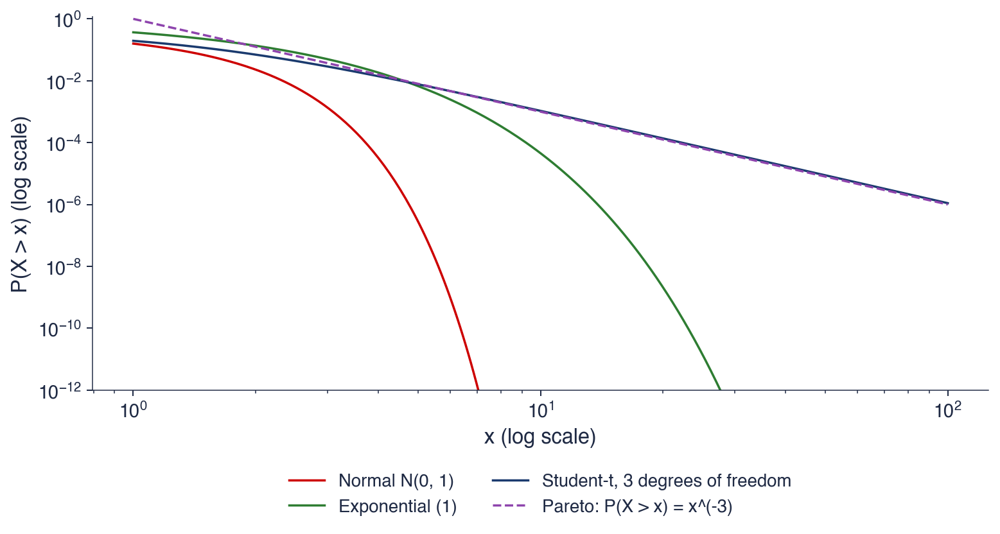
Pe axe log-log, o lege de putere este o dreaptă cu panta \(-\alpha\); cozile subțiri se curbează în jos și coboară rapid spre zero
\(P(X > 10)\): distribuția Normală \(7{,}6\times 10^{-24}\), distribuția exponențială \(4{,}5\times 10^{-5}\), Student-t cu 3 grade de libertate \(1{,}1\times 10^{-3}\)
Legea de putere \(\bar F(x) = C x^{-\alpha}\) este prea rigidă pentru datele reale, care o urmează doar aproximativ. Variația regulată (regular variation) este definiția generală. Pierderea \(L\) are o coadă cu variație regulată de indice \(\alpha > 0\) dacă
\[\bar F(x) = x^{-\alpha}\,\ell(x),\]
(5.1)
unde \(\ell\) este o funcție cu variație lentă (slowly varying): \(\ell(tx)/\ell(x) \to 1\) cînd \(x \to \infty\), pentru orice \(t > 0\). O constantă sau \(\ln x\) au variație lentă. Departe în coadă, \(\bar F\) se comportă ca puterea \(x^{-\alpha}\), pînă la un factor care variază atît de încet încît nu afectează rapoartele de probabilități.
O formulare echivalentă este \(P(L > tx)/P(L > x) \to t^{-\alpha}\) pentru \(x\) mare. Dublarea pierderii împarte probabilitatea ei la \(2^\alpha\), oricare ar fi nivelul de la care pornește dublarea. Această invarianță la scară este conținutul practic al unei cozi de tip putere: probabilitatea unei pierderi de 10% raportată la cea a unei pierderi de 5% este aceeași cu probabilitatea unei pierderi de 6% raportată la cea a unei pierderi de 3%. Pentru Student-t cu 3 grade de libertate, \(P(X > 20)/P(X > 10) = 0{,}128\), aproape de limita \(2^{-3} = 0{,}125\).
Tail index-ul legilor uzuale este cunoscut. O lege Pareto cu \(\bar F(x) = (x/x_0)^{-\alpha}\) are indicele \(\alpha\). O distribuție Student-t cu \(\nu\) grade de libertate are \(\alpha = \nu\). O lege \(\alpha\)-stabilă cu \(\alpha < 2\) (Capitolul 3) are un tail index egal cu parametrul ei de stabilitate. Distribuția Normală nu are coadă de tip putere; formal, \(\alpha = \infty\).
Pe scurt
\(L\) are o coadă cu variație regulată, de indice \(\alpha > 0\), dacă \(\bar F(x) = x^{-\alpha}\ell(x)\)
în cuvinte: departe în coadă, \(\bar F\) se comportă ca puterea \(x^{-\alpha}\), pînă la un factor \(\ell(x)\) care variază foarte lent
\(\ell\) este cu variație lentă: \(\ell(tx)/\ell(x) \to 1\) cînd \(x \to \infty\), pentru orice \(t > 0\) (de ex. o constantă, \(\ln x\))
Echivalent: \(\dfrac{P(L > tx)}{P(L > x)} \to t^{-\alpha}\) pentru \(x\) mare
dublarea pierderii împarte probabilitatea ei la \(2^\alpha\), oricare ar fi nivelul
Student-t cu 3 grade de libertate: \(P(X > 20)/P(X > 10) = 0{,}128\), aproape de \(2^{-3} = 0{,}125\)
Tail index-urile legilor uzuale
Pareto cu \(\bar F(x) = (x/x_0)^{-\alpha}\): indicele \(\alpha\); Student-t cu \(\nu\) grade de libertate: \(\alpha = \nu\)
\(\alpha\)-stabilă cu \(\alpha < 2\) (Capitolul 3): același \(\alpha\); distribuția Normală: fără coadă de tip putere (\(\alpha = \infty\))
Pentru o coadă cu variație regulată, momentul de ordin \(m\),\(E|L|^m\), este finit dacă \(m < \alpha\) și infinit dacă \(m > \alpha\). Integrala \(\int x^m \, dF(x)\) converge numai dacă densitatea, de ordinul \(x^{-\alpha-1}\), scade mai repede decît crește \(x^m\). Prin urmare, \(\alpha \le 1\) înseamnă că nu există media, \(\alpha \le 2\) că nu există varianța, iar \(\alpha \le 4\) că nu există boltirea (kurtosis).
Pentru randamentele acțiunilor, Gopikrishnan et al. (1999) raportează un tail index în jur de 3, „legea cubică inversă” (inverse cubic law). Cu \(\alpha \approx 3\) varianța este finită, dar momentul de ordinul patru nu. Acest lucru explică un fapt observat în Capitolul 2: boltirea de selecție a randamentelor zilnice nu se stabilizează cînd eșantionul crește, deoarece fiecare nouă zi extremă o poate modifica mult. Statisticile care se bazează pe momentul de ordinul patru, cum sînt testele bazate pe boltire, se comportă slab în prezența unor astfel de cozi.
Legătura cu Capitolul 3 cere atenție. Parametrul legii stabile, \(\alpha \approx 1{,}5\), se estimează din întreaga distribuție și implică varianță infinită, ca în modelul lui Mandelbrot (1963). Tail index-ul din acest capitol folosește numai cele mai mari pierderi. Un tail index în jur de 3 este argumentul împotriva varianței infinite anunțat în Capitolul 3: centrul distribuției poate arăta ca al unei legi stabile, dar coada ei îndepărtată scade mai repede decît permite o lege stabilă cu \(\alpha < 2\).
Pe scurt
Pentru o coadă cu variație regulată: \(E|L|^m < \infty\) dacă \(m < \alpha\) și \(E|L|^m = \infty\) dacă \(m > \alpha\)
\(E|L|^m\): momentul de ordin \(m\); este finit doar pentru ordine mai mici decît tail index-ul
\(\alpha \le 1\): nu există media; \(\alpha \le 2\): nu există varianța; \(\alpha \le 4\): nu există boltirea (kurtosis)
Graficul aplică diagnosticul log-log celor patru serii. Punctele reprezintă funcția de supraviețuire empirică, proporția zilelor cu o pierdere peste \(x\), în funcție de \(x\), pe axe logaritmice. Linia neagră este dreapta celor mai mici pătrate prin cele mai mari 2,5% dintre pierderi, iar curba roșie întreruptă este funcția de supraviețuire a distribuției Normale ajustate.
În toate cele patru panouri, capătul drept al punctelor este aproape de o dreaptă. Pantele sînt −3,00 pentru S&P 500, −3,57 pentru DAX, −2,79 pentru BET și −3,00 pentru Bitcoin, deci tail index-urile implicate sînt cuprinse aproximativ între 2,8 și 3,6, în acord cu legea cubică inversă. Curba distribuției Normale se îndepărtează de puncte cu mult înainte de cele mai mari pierderi; dincolo de cîteva procente, ea dă probabilități cu ordine de mărime prea mici.
Axa orizontală diferă de la un panou la altul: pierderile Bitcoin depășesc 40%, în timp ce pierderile indicilor rămîn sub aproximativ 13%. Pantele sînt totuși asemănătoare. Piețe cu volatilități foarte diferite au o formă a cozii asemănătoare, motiv pentru care obiectul capitolului este tail index-ul, nu volatilitatea.
Pe scurt
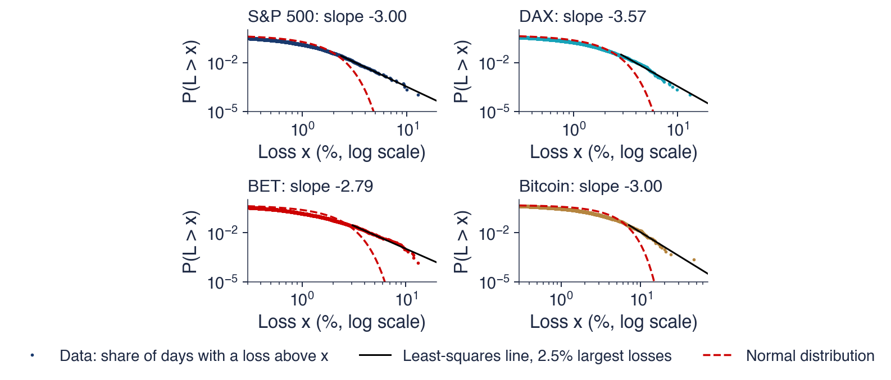
Puncte: proporția zilelor cu o pierdere peste \(x\); negru: dreapta celor mai mici pătrate prin cele mai mari 2,5% dintre pierderi; roșu: distribuția Normală
Pante: S&P 500 \(-3{,}00\), DAX \(-3{,}57\), BET \(-2{,}79\), Bitcoin \(-3{,}00\): drepte, deci cozi de tip putere
Dacă \(\bar F(x) \approx C x^{-\alpha}\), atunci \(\ln \bar F(x) \approx \ln C - \alpha \ln x\), o dreaptă cu panta \(-\alpha\). Estimatorul celor mai mici pătrate folosește direct această relație. Fie \(L_{(1)} \ge L_{(2)} \ge \dots \ge L_{(n)}\) pierderile ordonate descrescător; \(L_{(i)}\), a \(i\)-a cea mai mare pierdere, este o statistică de ordine (order statistic). Probabilitatea empirică de supraviețuire în \(L_{(i)}\) este aproximativ \(i/n\), iar estimatorul face regresia lui \(\ln(i/n)\) pe \(\ln L_{(i)}\) pentru cele mai mari \(k\) pierderi.
Graficul arată și unde încetează legea de putere. Corpul distribuției, adică pierderile mici, se depărtează de dreaptă: acolo funcția de supraviețuire este aproape de 1 și scade încet. Legea de putere descrie numai coada, iar alegerea numărului de statistici de ordine folosite, \(k\), este problema practică centrală a estimării cozii. Pentru indici, coada distribuției Normale coboară sub date încă de la pierderi de 3–4%.
Panta celor mai mici pătrate este simplă și intuitivă, dar are defecte statistice. Punctele funcției de supraviețuire empirice sînt cumulative, astfel încît punctele vecine au în comun cea mai mare parte a informației, iar erorile regresiei sînt puternic dependente; erorile standard obișnuite ale regresiei nu sînt valide. Estimatorul Hill din secțiunea următoare folosește aceleași statistici de ordine, cu o justificare prin verosimilitate, și este instrumentul standard.
Pe scurt
Dacă \(\bar F(x) \approx C x^{-\alpha}\), atunci \(\ln \bar F(x) \approx \ln C - \alpha \ln x\): o dreaptă cu panta \(-\alpha\)
estimatorul celor mai mici pătrate: regresia lui \(\ln(i/n)\) pe \(\ln L_{(i)}\) pentru cele mai mari \(k\) pierderi \(L_{(1)} \ge \dots \ge L_{(k)}\)
\(L_{(i)}\) este a \(i\)-a cea mai mare pierdere, o statistică de ordine
Corpul distribuției (pierderile mici) se depărtează de dreaptă: legea de putere este valabilă doar în coadă
Coada distribuției Normale coboară sub date încă de la pierderi de 3–4%, pentru indici
Panta celor mai mici pătrate este simplă, dar punctele folosite nu sînt independente; estimatorul Hill este instrumentul standard
Să presupunem că pierderile zilnice au o coadă Pareto cu \(\alpha = 3\) și o probabilitate de 1% a unei pierderi peste 3%. Atunci \(P(L > x) = 1\% \times (x/3)^{-3}\) pentru \(x \ge 3\%\). Probabilitatea unei pierderi peste 6% este \(1\% \times 2^{-3} = 0{,}125\%\), iar a unei pierderi peste 9% este \(1\% \times 3^{-3} = 0{,}037\%\). Dublarea pierderii împarte probabilitatea la \(2^3 = 8\), la orice nivel al cozii.
Întrebarea cere pierderea depășită cu probabilitatea 0,1%, adică VaR 0,1%. Rezolvînd \(1\% \times (x/3)^{-3} = 0{,}1\%\), obținem \((x/3)^3 = 10\) și \(x = 3 \times 10^{1/3} = 3 \times 2{,}15 = 6{,}46\%\). O probabilitate de zece ori mai mică în coadă crește pierderea doar cu factorul \(10^{1/\alpha} = 2{,}15\).
Exemplul conține logica oricărei extrapolări a cozii din acest capitol. O cuantilă îndepărtată se obține dintr-o cuantilă la un nivel moderat, unde datele sînt numeroase, înmulțită cu un factor care depinde numai de raportul probabilităților și de \(\alpha\). Precizia extrapolării depinde de precizia lui \(\alpha\), motiv pentru care estimarea tail index-ului ocupă secțiunea următoare.
Pe scurt
Pierderile zilnice au o coadă Pareto cu \(\alpha = 3\) și \(P(L > 3\%) = 1\%\)
o probabilitate de zece ori mai mică crește pierderea doar cu factorul \(10^{1/\alpha}\)
Sinteza secțiunii
O coadă groasă scade ca o putere, \(\bar F(x) = x^{-\alpha}\ell(x)\), iar tail index-ul \(\alpha\) determină care momente există. Pe axe log-log, cozile empirice ale celor patru serii sînt aproape de drepte cu pante între −2,8 și −3,6, în timp ce coada distribuției Normale coboară abrupt. Un tail index în jur de 3 înseamnă varianță finită și boltire infinită. Secțiunea următoare estimează \(\alpha\) cu estimatorul Hill și îi atașează o eroare standard.
Estimatorul Hill
Estimatorul Hill este estimatorul de verosimilitate maximă (maximum likelihood) al tail index-ului atunci cînd pierderile de peste un prag urmează o lege Pareto. Secțiunea îl derivă, îl aplică pe un exemplu mic, discută alegerea numărului \(k\) de observații din coadă, îi dă eroarea standard în ipoteza de independență și în prezența dependenței și estimează tail index-ul pentru patru piețe și pentru patru acțiuni de la Bursa de Valori București.
inversul mediei logaritmilor rapoartelor dintre cele mai mari \(k\) pierderi și pragul \(u = L_{(k+1)}\), a \((k+1)\)-a cea mai mare pierdere. Estimatorul folosește numai cele mai mari \(k + 1\) observații și nu face nicio ipoteză despre restul distribuției.
Justificarea vine dintr-o proprietate a legii Pareto. Dacă pierderile de peste \(u\) sînt Pareto, \(P(L > x \mid L > u) = (x/u)^{-\alpha}\) pentru \(x \ge u\), atunci excesul logaritmic \(\ln(L/u)\), condiționat de \(L > u\), satisface \(P(\ln(L/u) > y \mid L > u) = e^{-\alpha y}\): are distribuție exponențială cu media \(1/\alpha\). Media celor \(k\) excese logaritmice estimează \(1/\alpha\), iar inversa ei estimează \(\alpha\). Cum media de selecție este estimatorul de verosimilitate maximă al mediei unei distribuții exponențiale, estimatorul Hill este estimatorul de verosimilitate maximă al tail index-ului unei cozi Pareto peste \(u\).
Pentru pierderile care au doar variație regulată, (5.1), forma Pareto este valabilă aproximativ peste un prag înalt, iar estimatorul Hill este consistent cînd \(k\) crește mai încet decît \(n\). Estimatorul Hill și estimatorul celor mai mici pătrate din secțiunea anterioară sînt tratați amîndoi în Franke, Härdle & Hafner (2019), cap. 18.
Pe scurt
Ordonăm pierderile: \(L_{(1)} \ge L_{(2)} \ge \dots \ge L_{(n)}\); păstrăm cele mai mari \(k\)
în cuvinte: inversul mediei logaritmilor rapoartelor dintre cele mai mari \(k\) pierderi și prag
pragul este a \((k+1)\)-a cea mai mare pierdere, \(u = L_{(k+1)}\)
De ce funcționează: dacă \(P(L > x \mid L > u) = (x/u)^{-\alpha}\) (Pareto peste \(u\)), atunci \(\ln(L/u)\), condiționat de \(L > u\), are distribuție exponențială cu media \(1/\alpha\)
media celor \(k\) excese logaritmice estimează \(1/\alpha\); inversa ei estimează \(\alpha\)
Hill \(=\) estimatorul de verosimilitate maximă al unei cozi Pareto peste \(u\)
Portat din Quantlet-ul SFE SFElshill (estimatorii celor mai mici pătrate și Hill ai tail index-ului) Franke, Härdle & Hafner (2019)
Luăm cele mai mari șase pierderi zilnice ale unei serii, 9,5%, 7,2%, 6,1%, 5,4%, 4,8% și 4,0%, și fixăm \(k = 5\), astfel încît pragul este \(L_{(6)} = 4{,}0\%\). Excesele logaritmice \(\ln(L_{(i)}/4{,}0)\) ale celor mai mari cinci pierderi sînt 0,865, 0,588, 0,422, 0,300 și 0,182, cu media 0,471.
Estimarea Hill este \(\hat\alpha_5 = 1/0{,}471 = 2{,}12\). În ipoteza de independență, eroarea ei standard este aproximativ \(\mathrm{SE}(\hat\alpha) \approx \hat\alpha/\sqrt{k} = 2{,}12/\sqrt{5} = 0{,}95\), deci un interval aproximativ de 95% s-ar întinde de la circa 0,3 la circa 4.
Cu cinci observații din coadă, estimarea nu este informativă: nu poate deosebi o coadă fără varianță de una cu boltire finită. Aplicațiile reale folosesc sute de pierderi din coadă, iar cu \(k\) de cîteva sute eroarea standard relativă \(1/\sqrt{k}\) scade la cîteva procente. Prețul unui \(k\) mai mare este că observațiile provin tot mai mult din corpul distribuției, subiectul slide-ului următor.
Pe scurt
Cele mai mari șase pierderi zilnice (%): \(9{,}5\); \(7{,}2\); \(6{,}1\); \(5{,}4\); \(4{,}8\); \(4{,}0\); luăm \(k = 5\), deci \(L_{(6)} = 4{,}0\)
Excesele logaritmice \(\ln(L_{(i)}/4{,}0)\)
\(0{,}865\); \(0{,}588\); \(0{,}422\); \(0{,}300\); \(0{,}182\); media \(0{,}471\)
\(\hat\alpha_5 = 1/0{,}471 = 2{,}12\)
Eroarea standard în ipoteza de independență: \(\mathrm{SE}(\hat\alpha) \approx \hat\alpha/\sqrt{k} = 0{,}95\)
cu \(k = 5\), estimarea este foarte imprecisă: aplicațiile reale folosesc sute de pierderi
Alegerea lui \(k\) este un compromis între deplasare și varianță (bias–variance trade-off). Cu un \(k\) mic, estimatorul folosește numai coada îndepărtată, unde aproximarea Pareto este bună, dar puține puncte: varianța este mare. Cu un \(k\) mare intră corpul distribuției, unde legea de putere nu mai este valabilă: estimarea este deplasată (biased), de obicei în jos pentru pierderile financiare, deoarece pierderile moderate scad mai încet decît ar cere legea de putere.
Graficul Hill (Hill plot) reprezintă \(\hat\alpha_k\) în funcție de \(k\) și permite căutarea unei zone în care el este aproximativ orizontal (Drees, Resnick & de Haan, 2000). În capitol, \(k\) apare ca proporție din eșantion, \(k/n\) între 0,5% și 10%, astfel încît serii de lungimi diferite să poată fi comparate pe aceeași axă.
Regula se fixează înainte de a vedea rezultatele: \(k = 2{,}5\%\) din \(n\), iar estimările pentru \(k = 1\%\) și \(5\%\) din \(n\) se raportează ca verificare a robusteții. Fixarea regulii dinainte împiedică alegerea lui \(k\) în funcție de valoarea dorită a lui \(\alpha\), o formă de data snooping la care graficul Hill, cu multiplele lui interpretări posibile, se pretează.
Pe scurt
\(k\) mic: doar coada îndepărtată, puține puncte: varianță mare
\(k\) mare: intră corpul distribuției, unde legea de putere nu mai este valabilă: deplasare (bias)
Graficul Hill (Hill plot): \(\hat\alpha_k\) în funcție de \(k\); căutăm o zonă în care graficul este aproximativ orizontal Drees, Resnick & de Haan (2000)
aici \(k\) apare ca proporție din eșantion, \(k/n\) între 0,5% și 10%
Fixăm regula înainte de a vedea rezultatul: aici \(k = 2{,}5\%\) din \(n\)
și raportăm estimările pentru \(k = 1\%\) și \(5\%\) din \(n\), ca verificare
Graficul arată graficele Hill ale celor patru serii. Axa orizontală este proporția celor mai mari pierderi folosite, \(k/n\), de la 0,5% la 10%; axa verticală este estimarea Hill a lui \(\alpha\). Banda umbrită este intervalul de 95% pentru S&P 500, linia verticală punctată marchează regula \(k = 2{,}5\%\) din \(n\), iar liniile orizontale la \(\alpha = 2\) și \(\alpha = 4\) delimitează regiunile în care varianța, respectiv boltirea, sînt finite.
Între 1% și 5% din \(n\), curbele sînt aproximativ orizontale, în mare parte între 2 și 3,5. La proporțiile cele mai mici estimările fluctuează puternic, cum arată curba DAX, care pornește de peste 5 la \(k/n = 0{,}5\%\): cîteva observații nu pot fixa indicele. Peste 5% din \(n\), toate curbele coboară și se apropie de \(\alpha = 2\) sau trec sub această valoare: corpul distribuției introduce o deplasare în \(\hat\alpha\).
Interpretarea graficului este, așadar, că tail index-ul pierderilor zilnice se află între 2 și 4 în fiecare serie, iar cele patru curbe sînt apropiate în zona plată. Coborîrea la \(k\) mare este un avertisment: o estimare obținută din cele mai mari 10% dintre pierderi ar sugera o varianță infinită pe care coada îndepărtată nu o susține.
Pe scurt
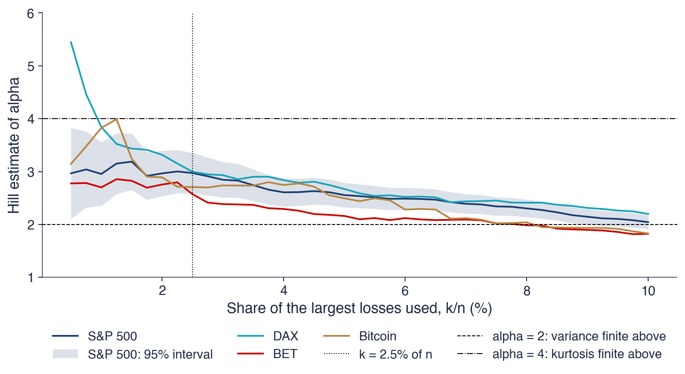
Între 1% și 5% din \(n\), curbele sînt aproximativ orizontale, în mare parte între 2 și 3,5; banda: intervalul de 95% pentru S&P 500
Peste 5%, estimările coboară: corpul distribuției introduce o deplasare în \(\hat\alpha\)
Condiția \(k/n \to 0\) spune că numărul observațiilor din coadă crește, dar ca proporție tot mai mică din eșantion, astfel încît ele rămîn în coadă. Rezultatul dă eroarea standard \(\mathrm{SE} = \hat\alpha/\sqrt{k}\) și intervalul de încredere (CI, confidence interval) de 95% \(\hat\alpha(1 \pm 1{,}96/\sqrt{k})\).
Randamentele nu sînt independente: pierderile mari apar grupat. În prezența dependenței, varianța asimptotică din (5.3) nu mai este \(\alpha^2\), iar eroarea standard i.i.d. poate subestima incertitudinea. Bootstrap-ul pe blocuri mobile (moving-block bootstrap) corectează acest lucru. El reeșantionează blocuri de 20 de zile consecutive, reconstruiește o serie de lungimea inițială, recalculează \(\hat\alpha\) și ia abaterea standard a estimărilor pe eșantioanele bootstrap. Deoarece fiecare bloc își păstrează grupul de pierderi mari, eroarea standard rezultată reflectă dependența dintr-o lună de tranzacționare.
În capitol, fiecare serie primește 500 de eșantioane bootstrap, cu \(k\) fixat la 2,5% din \(n\), regula graficului Hill. Lungimea blocului, de 20 de zile, corespunde aproximativ unei luni de tranzacționare, suficient pentru a cuprinde un episod tipic de volatilitate ridicată.
Pe scurt
Pentru date i.i.d. cu coadă de tip Pareto: \(\sqrt{k}\,(\hat\alpha_k - \alpha) \to N(0, \alpha^2)\), pentru \(k \to \infty\), \(k/n \to 0\)
i.i.d.: independente și identic distribuite; pentru \(k\) mare, \(\hat\alpha_k\) are aproximativ distribuție Normală în jurul lui \(\alpha\)
\(k/n \to 0\): numărul pierderilor din coadă crește, dar reprezintă o proporție tot mai mică din eșantion
\(\mathrm{SE} = \hat\alpha/\sqrt{k}\); CI (confidence interval, intervalul de încredere) de 95%: \(\hat\alpha(1 \pm 1{,}96/\sqrt{k})\)
Randamentele nu sînt independente: pierderile mari apar grupat (volatility clustering)
bootstrap pe blocuri mobile: reeșantionăm blocuri de 20 de zile consecutive, recalculăm \(\hat\alpha\) și calculăm abaterea standard a estimărilor
blocurile păstrează episoadele grupate, deci eroarea standard ține seama de dependență
Pentru fiecare serie: 500 de eșantioane bootstrap, cu \(k\) fixat pe slide-ul graficului Hill
Tabelul raportează, pentru fiecare serie, volumul eșantionului \(n\), numărul \(k\) de pierderi din coadă, estimarea Hill \(\hat\alpha\) cu intervalul ei de 95%, erorile standard i.i.d. și bootstrap pe blocuri, estimările pentru \(k = 1\%\) și \(5\%\) din \(n\) și indicele Hill al cîștigurilor. Pentru S&P 500, \(n = 9\,240\) de zile și \(k = 231\) dau \(\hat\alpha = 2{,}97\), cu intervalul \([2{,}59; 3{,}35]\). DAX are \(\hat\alpha = 3{,}00\), BET 2,57, iar Bitcoin 2,71.
Toate cele patru estimări sînt cuprinse între 2,57 și 3,00, iar toate cele patru intervale exclud valoarea 2 și se află sub 4: varianța pierderilor zilnice este finită, boltirea nu. Eroarea standard bootstrap pe blocuri este de același ordin cu cea i.i.d.: pentru S&P 500 este cu jumătate mai mare (0,30 față de 0,20), iar pentru DAX (0,20 față de 0,20), BET (0,23 față de 0,19) și Bitcoin (0,23 față de 0,26) cele două diferă cu cel mult 0,04. Sensibilitatea la \(k\) este mai mare decît eroarea de eșantionare: estimarea DAX este 3,84 la \(k = 1\%\) și 2,67 la \(k = 5\%\), o diferență de peste cinci erori standard.
Ultima coloană aplică estimatorul cîștigurilor, adică zilelor cu \(r_t > 0\), cu același \(k\). Indicii cîștigurilor sînt 2,96 pentru S&P 500, 3,22 pentru DAX, 2,82 pentru BET și 3,37 pentru Bitcoin. Pentru DAX, BET și Bitcoin, cîștigurile au o coadă mai subțire decît pierderile; pentru S&P 500 cei doi indici sînt practic egali.
Pe scurt
\(n\)
\(k\)
\(\hat\alpha\)
CI 95%
SE i.i.d.
SE blocuri
\(k = 1\%\) / \(5\%\)
cîștiguri
S&P 500
9 240
231
\(2{,}97\)
\([2{,}59; 3{,}35]\)
\(0{,}20\)
\(0{,}30\)
\(2{,}95\) / \(2{,}56\)
\(2{,}96\)
DAX
9 288
232
\(3{,}00\)
\([2{,}61; 3{,}38]\)
\(0{,}20\)
\(0{,}20\)
\(3{,}84\) / \(2{,}67\)
\(3{,}22\)
BET
7 243
181
\(2{,}57\)
\([2{,}20; 2{,}95]\)
\(0{,}19\)
\(0{,}23\)
\(2{,}70\) / \(2{,}16\)
\(2{,}82\)
Bitcoin
4 384
109
\(2{,}71\)
\([2{,}20; 3{,}21]\)
\(0{,}26\)
\(0{,}23\)
\(3{,}83\) / \(2{,}49\)
\(3{,}37\)
Pierderi: \(\hat\alpha\) între \(2{,}57\) și \(3{,}00\)
intervalele exclud 2 (varianță finită) și sînt sub 4 (boltire infinită)
SE din bootstrap pe blocuri este apropiată aici de cea i.i.d.; estimările variază cu \(k\) cu mai mult de o SE
Ultima coloană: indicele Hill al cîștigurilor (\(r_t > 0\)), același \(k\)
unde \(\hat x_p\) este pierderea depășită cu probabilitatea \(p\), iar \(k/n\) este proporția pierderilor de peste pragul \(L_{(k+1)}\). Formula pornește de la prag, care este depășit cu probabilitatea de aproximativ \(k/n\), și extrapolează cu legea de putere pînă la probabilitatea mai mică \(p\), exact ca în exemplul Pareto.
Pentru S&P 500 și VaR 0,1%: \(n = 9\,240\),\(k = 231\),\(L_{(k+1)} = 2{,}34\%\) și \(\hat\alpha = 2{,}97\). Atunci \(k/(np) = 231/9{,}24 = 25{,}0\) și \(25{,}0^{1/2{,}97} = 2{,}95\), deci \(\hat x_{0{,}001} = 2{,}34 \times 2{,}95 = 6{,}92\%\). Cuantila empirică de 0,1% a eșantionului este 6,94%: în interiorul eșantionului, extrapolarea și datele coincid.
Extrapolarea este doar atît de bună cît este \(\hat\alpha\). Exponentul \(1/\hat\alpha\) înmulțește \(\ln(k/(np))\), care este mare cînd \(p\) este mic, astfel încît o eroare de o eroare standard în \(\hat\alpha\) modifică vizibil \(\hat x_p\), iar modificarea crește pe măsură ce \(p\) se deplasează mai departe în coadă.
Pe scurt
Cuantila Hill (Weissman)Weissman (1978): \(\hat x_p = L_{(k+1)}\Big(\dfrac{k}{n p}\Big)^{1/\hat\alpha}\)
\(\hat x_p\): pierderea depășită cu probabilitatea \(p\); \(k/n\): proporția pierderilor de peste pragul \(L_{(k+1)}\)
extrapolată de la prag cu legea de putere; Quantlet-ul SFE SFEhillquantile
Exemplu lucrat, S&P 500, VaR 0,1%: \(n = 9\,240\), \(k = 231\), \(L_{(k+1)} = 2{,}34\%\), \(\hat\alpha = 2{,}97\)
Aceeași analiză se aplică pentru patru acțiuni mari de la Bursa de Valori București: OMV Petrom (SNP), BRD, Banca Transilvania (TLV) și Transgaz (TGN). Datele sînt randamentele logaritmice zilnice ale prețului de închidere ajustat, din 2010, cu \(k = 2{,}5\%\) din \(n\). Pentru TLV sînt eliminate cele două zile de 30–31 mai 2016: o ajustare de preț a fost înregistrată cu o zi întîrziere, ceea ce ar crea altfel două randamente extreme false (Capitolul 2).
Estimările sînt 2,96 pentru SNP, 3,22 pentru BRD, 2,49 pentru TLV și 3,02 pentru TGN, toate între 2,49 și 3,22, ca la indici. Cu aproximativ 3 800 de zile pe acțiune, intervalele sînt mai largi decît la indici: intervalul TLV, \([1{,}98; 2{,}99]\), coboară foarte puțin sub 2, în timp ce celelalte se află deasupra acestei valori. Erorile standard bootstrap pe blocuri variază de la 0,28 (TLV) la 0,39 (SNP).
Ultima coloană arată indicele cîștigurilor. Pentru toate cele patru acțiuni el este mai mare decît indicele pierderilor, între 3,55 și 3,77: pierderile acțiunilor BVB individuale au cozi mai groase decît cîștigurile lor. Asimetria este mai clară decît la indici și înseamnă că o distribuție simetrică ajustată la ambele cozi ar subestima riscul de scădere.
Pe scurt
\(n\)
\(\hat\alpha\)
CI 95%
SE blocuri
cîștiguri
OMV Petrom (SNP)
3 815
\(2{,}96\)
\([2{,}36; 3{,}56]\)
\(0{,}39\)
\(3{,}71\)
BRD
3 771
\(3{,}22\)
\([2{,}57; 3{,}87]\)
\(0{,}33\)
\(3{,}77\)
Banca Transilvania (TLV)
3 788
\(2{,}49\)
\([1{,}98; 2{,}99]\)
\(0{,}28\)
\(3{,}55\)
Transgaz (TGN)
3 725
\(3{,}02\)
\([2{,}41; 3{,}64]\)
\(0{,}31\)
\(3{,}56\)
Randamente logaritmice zilnice, calculate din prețul ajustat, din 2010; \(k = 2{,}5\%\) din \(n\)
TLV: zilele de 30–31 mai 2016 sînt eliminate, din cauza unei ajustări înregistrate cu o zi întîrziere (Capitolul 2)
Toate cele patru acțiuni: \(\hat\alpha\) între \(2{,}49\) și \(3{,}22\), ca la indici; pierderile au cozi mai groase decît cîștigurile
Graficul arată graficele Hill ale celor patru acțiuni, pe aceleași axe ca pentru indici. Cu eșantioane de aproximativ 3 800 de zile, curbele oscilează mai mult la \(k\) mic, unde în estimare intră doar cîteva zeci de pierderi, iar banda de 95%, afișată pentru TLV, este mai largă decît banda S&P 500.
În zona plată, nicio acțiune nu are \(\hat\alpha\) sub 2, deci varianțele sînt finite. Cele patru acțiuni, din sectorul energetic (SNP, TGN) și din cel bancar (BRD, TLV), au tail index-uri asemănătoare, deși activitățile lor diferă. Coada groasă este o proprietate a pierderilor zilnice în general, nu a unei singure piețe sau a unui singur sector.
Pe scurt
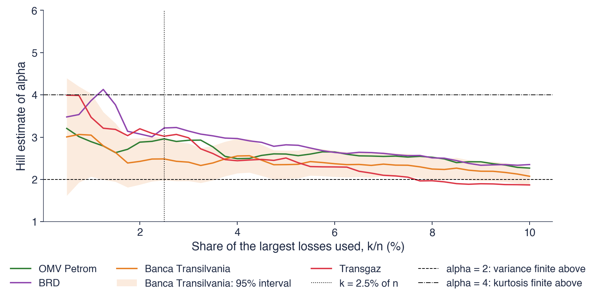
Eșantioane mai scurte (\(n \approx 3\,800\)): benzi mai largi (afișată pentru TLV) și mai multe oscilații la \(k\) mic
Nicio acțiune nu are \(\hat\alpha\) sub 2 în zona plată: varianțele sînt finite
Estimatorul Hill transformă cele mai mari \(k\) pierderi într-o estimare a tail index-ului, (5.2), cu eroarea standard \(\hat\alpha/\sqrt{k}\) în ipoteza de independență și cu o eroare standard bootstrap pe blocuri în prezența dependenței. Cu \(k = 2{,}5\%\) din \(n\), cele patru piețe au \(\hat\alpha\) între 2,57 și 3,00, iar cele patru acțiuni BVB între 2,49 și 3,22; toate intervalele se află sub 4, iar în zona plată a graficului Hill nicio estimare nu este sub 2. Estimările variază cu \(k\) cu mai mult de o eroare standard, iar formula Weissman (5.4) transformă \(\hat\alpha\) într-o cuantilă a cozii. Secțiunea următoare introduce un al doilea diagnostic al cozii, funcția mean excess.
Funcția mean excess
Funcția mean excess măsoară mărimea medie a unei pierderi dincolo de un prag, știind că pragul a fost depășit. Forma ei deosebește cozile subțiri de cele groase, iar liniaritatea ei peste un prag este unul dintre instrumentele de alegere a pragului în metoda peaks over threshold din Secțiunea 6.
pierderea medie dincolo de \(u\), știind că \(u\) este depășit. Versiunea ei empirică este media diferențelor \(L_i - u\) pentru pierderile cu \(L_i > u\). În limbajul riscului, \(u + e(u)\) este pierderea așteptată într-o zi în care pierderea depășește \(u\), mărimea pe care ES o calculează pentru \(u = \mathrm{VaR}\).
Forma funcției identifică tipul de coadă. Pentru distribuția exponențială, \(e(u)\) este constantă, consecință a lipsei de memorie: faptul că \(u\) a fost depășit nu spune nimic despre cît de departe merge pierderea. Pentru o lege Pareto cu \(\alpha > 1\),\(e(u) = u/(\alpha - 1)\), o dreaptă crescătoare: cu cît pragul este mai înalt, cu atît excesul așteptat este mai mare. Pentru distribuția Normală, \(e(u)\) scade spre 0, aproximativ ca \(1/u\) pentru distribuția Normală standard: dincolo de un prag înalt, pierderea abia mai crește.
Pentru o coadă Pareto cu \(\alpha = 3\),\(e(u) = u/2\). Dincolo de o pierdere de 2%, pierderea suplimentară medie este 1,0%, iar dincolo de 4% este 2,0%. Într-o zi deja proastă, o coadă groasă implică faptul că pierderea suplimentară așteptată crește cu gravitatea deja observată, opusul a ceea ce implică modelul Normal.
Pe scurt
Funcția mean excess (excesul mediu): \(e(u) = E[L - u \mid L > u]\), pierderea medie peste \(u\), știind că \(u\) este depășit
versiunea empirică: media lui \(L_i - u\) pentru pierderile cu \(L_i > u\)
Pareto cu \(\alpha > 1\): \(e(u) = u/(\alpha - 1)\), o dreaptă crescătoare
distribuția Normală: \(e(u)\) scade spre 0 (aproximativ \(1/u\) pentru distribuția Normală standard)
Exemplu: coadă Pareto cu \(\alpha = 3\): \(e(u) = u/2\)
peste o pierdere de 2%, pierderea suplimentară medie este \(1{,}0\%\); peste 4% este \(2{,}0\%\): cu cît pragul este mai mare, cu atît excesul mediu este mai mare
Graficul reprezintă excesul mediu empiric \(e(u)\) al pierderilor zilnice în funcție de pragul \(u\), pentru cele patru serii. Linia verticală punctată marchează cuantila de 90% a pierderilor, iar linia neagră este excesul mediu implicat de distribuția Pareto generalizată ajustată peste acest prag în Secțiunea 6.
Peste cuantila de 90%, toate cele patru funcții cresc, aproximativ de-a lungul unor drepte: cozile sînt groase, de tip Pareto. Sub ea, curbele sînt mai plate sau, pentru DAX, aproape constante; aceasta este zona corpului distribuției, unde legea de putere nu este valabilă. Dreptele ajustate urmează punctele pe cea mai mare parte a intervalului de peste prag.
Ultimele puncte din dreapta se bazează pe foarte puține pierderi: excesul mediu la un prag apropiat de maxim este o medie a unuia sau a două numere. Ele sar, în sus pentru S&P 500 și Bitcoin și în jos pentru DAX, și nu trebuie interpretate literal. Partea informativă a graficului este panta pe intervalul în care încă multe observații depășesc \(u\).
Pe scurt
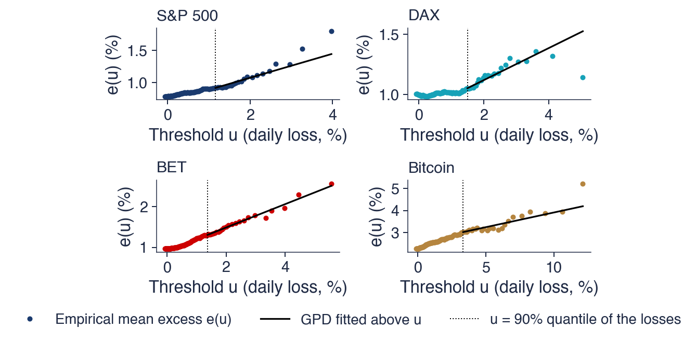
Toate cele patru funcții cresc peste cuantila de 90% \(u\) (punctat): o coadă groasă, de tip Pareto; negru: dreapta modelului de coadă ajustat peste \(u\) (Secțiunea 6)
Ultimele puncte se bazează pe foarte puține pierderi și sînt instabile: nu le interpretați literal
Utilitatea practică a graficului este găsirea pragului peste care \(e(u)\) devine aproximativ o dreaptă. O dreaptă crescătoare indică o coadă groasă, iar panta ei dă o primă idee despre forma cozii: pentru o lege Pareto panta este \(1/(\alpha - 1)\), iar pentru distribuția Pareto generalizată din Secțiunea 6 este \(\xi/(1 - \xi)\).
La cuantila de 90%, excesul mediu este 0,92% pentru S&P 500, al cărui prag este \(u = 1{,}16\%\), și 1,30% pentru BET, cu \(u = 1{,}38\%\). Într-o zi în care pierderea depășește cuantila de 90%, partea pierderii de dincolo de prag este, în medie, apropiată de pragul însuși; pierderea așteptată într-o astfel de zi este aproape dublul pragului.
Funcția mean excess este unul dintre instrumentele grafice pentru alegerea pragului în metoda peaks over threshold, alături de graficul stabilității parametrilor din Secțiunea 6. Niciunul dintre cele două instrumente nu dă un răspuns unic; amîndouă restrîng intervalul pragurilor rezonabile.
Pe scurt
Căutăm pragul peste care \(e(u)\) devine aproximativ o dreaptă
o dreaptă crescătoare înseamnă o coadă groasă; panta ei dă o primă idee despre forma cozii
La cuantila de 90%: \(e(u)\) este \(0{,}92\%\) pentru S&P 500 (\(u = 1{,}16\%\)) și \(1{,}30\%\) pentru BET (\(u = 1{,}38\%\))
într-o zi cu o pierdere peste \(u\), excesul peste \(u\) este, în medie, aproximativ egal cu \(u\)
Funcția mean excess este unul dintre instrumentele pentru alegerea pragului în metoda peaks over threshold (Secțiunea 6)
Funcția mean excess (5.5) este constantă pentru cozile exponențiale, descrescătoare pentru distribuția Normală și liniar crescătoare pentru cozile de tip Pareto. Pentru cele patru serii, ea crește peste cuantila de 90%, ceea ce confirmă cozile groase cu un instrument independent de estimatorul Hill. La acest prag, excesul mediu al S&P 500 este 0,92%, iar cel al BET 1,30%. Secțiunea următoare introduce prima teoremă limită a EVT, pentru maximele pe blocuri.
Block maxima și distribuția GEV
Prima abordare a teoriei valorilor extreme privește cea mai mare pierdere din fiecare bloc de observații, aici fiecare lună calendaristică. O teoremă limită, analogul teoremei limită centrale pentru maxime, spune că maximele normalizate corespunzător pot avea o singură familie de legi limită, distribuția generalizată a valorilor extreme (GEV, generalised extreme value). Secțiunea ajustează GEV la maximele lunare, verifică ajustarea și calculează return levels, adică pierderile depășite în medie o dată la \(T\) ani.
Împărțim pierderile în blocuri de aceeași lungime și păstrăm cea mai mare pierdere din fiecare bloc. Cu \(n\) observații pe bloc, maximul blocului este \(M_n = \max(L_1, \dots, L_n)\). În capitol, un bloc este o lună calendaristică, cu aproximativ 21 de zile de tranzacționare, deci fiecare serie dă un maxim pe lună.
Întrebarea este care este legea lui \(M_n\) pentru \(n\) mare. Dacă pierderile sînt i.i.d. cu funcția de repartiție \(F\), atunci \(P(M_n \le x) = F(x)^n\), care tinde la 0 sau la 1 pentru orice \(x\) fixat; maximul trebuie centrat și rescalat pentru a avea o limită netrivială. Este același pas ca în teorema limită centrală, aplicat maximelor în loc de sume.
Fisher & Tippett (1928) au găsit cele trei legi limită posibile, studiind distribuția celui mai mare element al unui eșantion. Rezultatul lor, completat de Gnedenko, este subiectul slide-ului următor. Ronald A. Fisher, din fotografie, este mai cunoscut pentru lucrările sale despre verosimilitate și planificarea experimentelor.
Pe scurt
Împărțim pierderile în blocuri de aceeași lungime și păstrăm cea mai mare pierdere din fiecare bloc
\(M_n = \max(L_1, \dots, L_n)\), aici cea mai mare pierdere zilnică din fiecare lună calendaristică (\(n \approx 21\))
Întrebarea: care este legea lui \(M_n\) pentru \(n\) mare?
analogul teoremei limită centrale, pentru maxime în loc de sume
Fisher & Tippett (1928) au găsit cele trei legi limită posibile, studiind cel mai mare element al unui eșantion
pentru o funcție de repartiție nedegenerată \(H\), atunci \(H\) este o distribuție generalizată a valorilor extreme (GEV) (Fisher & Tippett, 1928; Gnedenko, 1943). Aici \(b_n\) centrează maximul, iar \(a_n\) îl rescalează, așa cum se standardizează \(\bar X_n\) în teorema limită centrală (CLT, central limit theorem). Nedegenerată înseamnă că \(H\) este o distribuție propriu-zisă, nu o masă concentrată într-un singur punct.
Teorema nu spune că orice maxim converge; unele distribuții nu au o limită nedegenerată pentru nicio normalizare. Ea spune că, ori de cîte ori limita există, ea aparține unei singure familii. Oricare ar fi legea pierderilor, maximul normalizat are o singură familie de limite posibile, cu trei parametri.
Consecința pentru statistică este aceeași ca la teorema limită centrală. Pentru a modela maximele nu este nevoie să cunoaștem \(F\): pentru blocuri mari, familia GEV poate fi ajustată direct la maximele observate ale blocurilor. Constantele \(a_n\) și \(b_n\) sînt absorbite în parametrii de locație și de scală ai legii ajustate.
Pe scurt
\(L_1, L_2, \dots\) i.i.d. Dacă există constante \(a_n > 0\), \(b_n\) astfel încît \(P\Big(\dfrac{M_n - b_n}{a_n} \le x\Big) \to H(x)\), nedegenerată,
iar pentru \(\xi = 0\), ca limită pentru \(\xi \to 0\),\(H(x) = \exp\{-e^{-(x - \mu)/\sigma}\}\). Această formă unificată, care cuprinde cele trei tipuri clasice într-o singură expresie, îi aparține lui Jenkinson (1955).
Fiecare parametru are un rol. Locația \(\mu\) deplasează distribuția și măsoară mărimea tipică a maximului. Scala \(\sigma\) o dilată și măsoară dispersia maximelor. Forma \(\xi\) guvernează coada dreaptă: cu cît \(\xi\) este mai mare, cu atît coada este mai groasă.
Parametrul de formă este cel important pentru risc. Locația și scala depind de lungimea blocului și de volatilitatea seriei; forma este moștenită de la coada pierderilor zilnice și nu se schimbă cu lungimea blocului. Estimarea lui \(\xi\) este, așadar, o altă cale de a estima coada pierderilor.
Pe scurt
GEV cu forma \(\xi\), locația \(\mu\), scala \(\sigma > 0\) (forma unificată a lui Jenkinson (1955))
Semnul lui \(\xi\) separă trei tipuri. Pentru \(\xi > 0\), GEV este de tip Fréchet, cu coadă groasă: \(1 - H(x) \sim x^{-1/\xi}\), o lege de putere cu tail index-ul \(\alpha = 1/\xi\). Este cazul pierderilor financiare și al maximelor oricărei legi cu variație regulată. Pentru \(\xi = 0\), GEV este de tip Gumbel, cu coadă subțire, exponențială; maximele variabilelor cu distribuție Normală, lognormală sau exponențială converg către el.
Pentru \(\xi < 0\), GEV este de tip Weibull, cu un capăt superior finit, \(\mu - \sigma/\xi\). Maximele variabilelor mărginite, cum sînt cele cu distribuție uniformă sau Beta, converg către el: un maxim nu poate depăși marginea superioară a variabilelor.
Mulțimea legilor ale căror maxime converg către un \(H\) dat este domeniul de atracție al maximului (maximum domain of attraction) său. Coada lui \(F\) decide domeniul: cozile de tip putere duc la Fréchet, cozile de tip exponențial la Gumbel, suporturile mărginite la Weibull. Maurice Fréchet, din fotografie, a dat numele tipului cu coadă groasă.
Graficul arată cele trei tipuri cu parametrii de locație și de scală standard, \(\mu = 0\) și \(\sigma = 1\). Densitatea Fréchet are cea mai lungă coadă dreaptă. Densitatea Gumbel scade exponențial de ambele părți. Densitatea Weibull se oprește la \(x = 2\), capătul ei superior \(\mu - \sigma/\xi\), care pentru \(\xi = -0{,}5\) este egal cu 2.
Cele trei densități seamănă în jurul modului și diferă în coada dreaptă, exact regiunea care contează pentru risc. Un eșantion de mărime moderată nu poate deosebi ușor, după histogramă, o lege Gumbel de o lege Fréchet cu un \(\xi\) pozitiv mic; diferența apare în cele mai mari observații și în estimarea lui \(\xi\).
Pe scurt
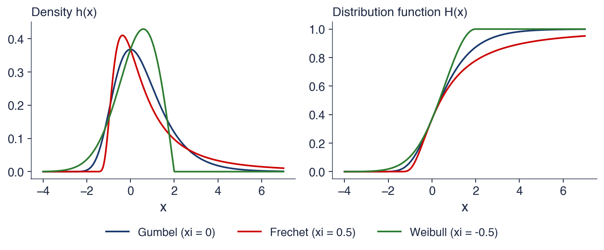
Parametri de locație și de scală standard (\(\mu = 0\), \(\sigma = 1\)): Fréchet are cea mai lungă coadă dreaptă, Weibull se oprește la \(x = 2\)
Graficul ilustrează teorema cu 5 000 de eșantioane simulate, fiecare cu \(n = 250\) de observații. Maximele variabilelor exponențiale de parametru 1, minus \(\ln n\), converg către legea Gumbel; maximele variabilelor Pareto cu \(\alpha = 3\), împărțite la \(n^{1/3}\), converg către o lege Fréchet cu \(\xi = 1/3\); pentru variabile uniforme pe \((0, 1)\),\(n(M_n - 1)\) converge către o lege Weibull. În fiecare panou, histograma maximelor simulate este aproape de densitatea limită, desenată cu negru.
Constantele de normalizare diferă de la un caz la altul, iar forma lor reflectă coada. Pentru distribuția exponențială, maximul crește ca \(\ln n\); pentru Pareto cu \(\alpha = 3\) crește ca \(n^{1/3}\), mult mai repede; pentru distribuția uniformă se apropie de marginea superioară 1 cu viteza \(1/n\). Limitele au forma prezisă de teoremă: Gumbel cu scădere exponențială, Fréchet cu o coadă dreaptă lungă și Weibull cu un capăt finit în 0.
Pierderile zilnice au un tail index în jur de 3, deci maximele lor lunare aparțin domeniului Fréchet, cu \(\xi = 1/\alpha \approx 0{,}3\). Acesta este răspunsul la întrebarea pentru sală, iar slide-ul următor îl verifică pe date.
Pe scurt
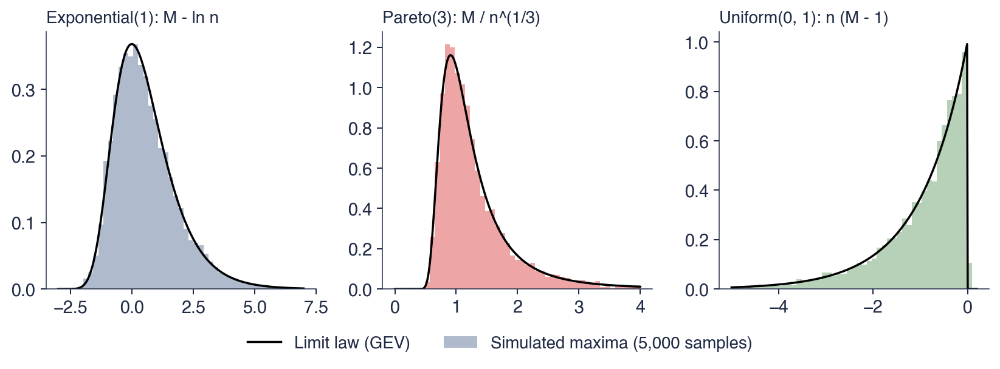
5 000 de eșantioane de \(n = 250\); maximele exponențiale minus \(\ln n\)\(\to\) Gumbel; maximele Pareto(3) împărțite la \(n^{1/3}\)\(\to\) Fréchet cu \(\xi = 1/3\); uniformă: \(n(M_n - 1)\)\(\to\) Weibull
Întrebare pentru sală: pierderile zilnice au un tail index în jur de 3; ce tip de distribuție au maximele lor lunare?
Răspuns: Fréchet, cu \(\xi = 1/\alpha \approx 0{,}3\)
Tabelul raportează ajustările prin verosimilitate maximă ale distribuției GEV la maximele lunare ale pierderilor zilnice: 440 de luni pentru S&P 500 și DAX, 342 pentru BET și 144 pentru Bitcoin. Erorile standard, din care rezultă intervalele de 95%, provin din curbura log-verosimilității în punctul de maxim. Pentru S&P 500, \(\hat\xi = 0{,}21\) cu intervalul \([0{,}13; 0{,}29]\), locația \(\hat\mu = 1{,}31\%\) și scala \(\hat\sigma = 0{,}74\%\).
Toate cele patru estimări ale formei sînt pozitive: 0,21 pentru S&P 500, 0,17 pentru DAX, 0,36 pentru BET și 0,23 pentru Bitcoin. Toate cele patru intervale exclud valoarea 0, deci tipul Gumbel, cu coada lui subțire, este respins pentru fiecare serie: maximele lunare sînt de tip Fréchet. Locațiile, de la 1,31% pentru S&P 500 la 5,19% pentru Bitcoin, reflectă cea mai proastă zi tipică a unei luni pe fiecare piață.
Ultima coloană, \(1/\hat\xi\), este o a doua estimare a tail index-ului: 4,7 pentru S&P 500, 5,9 pentru DAX, 2,7 pentru BET și 4,3 pentru Bitcoin. Numai valoarea BET este apropiată de estimarea Hill. Cu o singură pierdere pe lună, abordarea block maxima folosește mai puține observații din coadă decît estimatorul Hill și este mai puțin precisă; în plus, o lună de aproximativ 21 de zile este un bloc scurt, iar limita GEV este atunci doar o aproximare.
Pe scurt
luni
\(\hat\xi\)
CI 95%
\(\hat\mu\) (%)
\(\hat\sigma\) (%)
\(1/\hat\xi\)
S&P 500
440
\(0{,}21\)
\([0{,}13; 0{,}29]\)
\(1{,}31\)
\(0{,}74\)
\(4{,}7\)
DAX
440
\(0{,}17\)
\([0{,}09; 0{,}25]\)
\(1{,}69\)
\(0{,}91\)
\(5{,}9\)
BET
342
\(0{,}36\)
\([0{,}26; 0{,}46]\)
\(1{,}47\)
\(0{,}92\)
\(2{,}7\)
Bitcoin
144
\(0{,}23\)
\([0{,}08; 0{,}38]\)
\(5{,}19\)
\(2{,}85\)
\(4{,}3\)
Verosimilitate maximă pe maximele lunare ale pierderilor zilnice; SE din curbura log-verosimilității
\(\hat\xi > 0\) pentru toate cele patru serii: tip Fréchet, cozi groase; intervalele exclud 0 (Gumbel)
\(1/\hat\xi\) este o a doua estimare a tail index-ului; cu o singură pierdere pe lună este mai puțin precisă decît estimatorul Hill
Două grafice verifică ajustarea pentru S&P 500. Graficul probabilitate–probabilitate (PP) pune probabilitatea ajustată \(H(m_{(i)})\) a fiecărui maxim ordonat \(m_{(i)}\) față de probabilitatea lui empirică \((i - 0{,}5)/n\). Graficul cuantilă–cuantilă (QQ) pune maximele observate față de cuantilele GEV ajustate. Dacă modelul este corect, ambele grafice se află pe prima bisectoare.
Graficul PP stă pe dreaptă pe tot intervalul: GEV descrie bine majoritatea maximelor lunare. Graficul PP comprimă însă coada în colțul de lîngă 1, unde toate probabilitățile sînt apropiate. Graficul QQ arată coada în unitățile originale. El stă pe dreaptă pînă la maxime lunare de aproximativ 5%, iar peste acest nivel cîteva dintre cele mai extreme luni, din 2008 și 2020, sînt puțin deasupra dreptei: ele au fost mai mari decît prezice modelul ajustat.
Lunile cele mai extreme sînt partea cea mai greu de ajustat și tocmai ele contează pentru risc. Cîteva puncte deasupra dreptei într-un grafic QQ cu 440 de maxime sînt compatibile cu un model corect, dar arată și că estimarea lui \(\xi\) este sensibilă la aceste luni.
Pe scurt
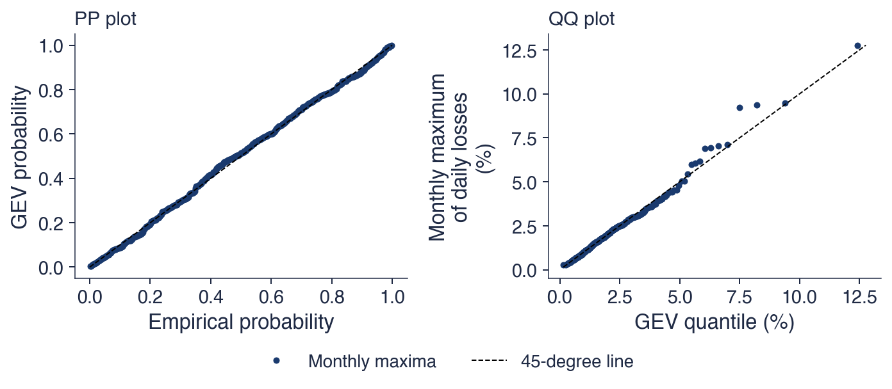
Graficul PP: probabilitatea ajustată \(H(m_{(i)})\) față de cea empirică \((i - 0{,}5)/n\); graficul QQ: maximele observate față de cuantilele ajustate; S&P 500
Ambele grafice sînt aproape de prima bisectoare; în graficul QQ, cele cîteva luni extreme (2008, 2020) sînt puțin deasupra: este partea cea mai greu de ajustat
Return level-ul pentru o perioadă de revenire (return period) de \(T\) ani este nivelul pe care maximul lunar îl depășește, în medie, o dată la \(T\) ani. Cu \(m = 12T\) luni, el este cuantila de ordin \(1 - 1/m\) a distribuției GEV:
Noțiunea vine din hidrologie, unde „inundația de 100 de ani” este return level-ul pentru \(T = 100\). În managementul riscului, ea răspunde la întrebarea cît de mare este pierderea la care trebuie să ne așteptăm pe un orizont dat.
Pentru S&P 500 și \(T = 10\) ani, ajustarea dă \(\hat\xi = 0{,}211\),\(\hat\mu = 1{,}311\) și \(\hat\sigma = 0{,}737\). Atunci \(m = 120\),\(-\ln(1 - 1/120) = 0{,}00837\), iar ridicat la puterea \(-\hat\xi\) acest număr dă 2,747. Return level-ul este \(z_{10} = 1{,}311 + (0{,}737/0{,}211)(2{,}747 - 1) = 7{,}4\%\).
O pierdere zilnică de aproximativ 7,4% în S&P 500 este, așadar, un „eveniment de 10 ani”. În cei 36,7 ani ai eșantionului, ea a fost depășită în 4 luni, aproape de cele 3,7 luni pe care le implică o perioadă de revenire de 10 ani. Depășirile nu sînt distribuite uniform: ele se grupează în anii de criză, ceea ce arată că perioada de revenire este o medie pe termen lung, nu un calendar.
Pe scurt
Return level pentru o perioadă de revenire de \(T\) ani: nivelul pe care maximul lunar îl depășește, în medie, o dată la \(T\) ani
Graficul reprezintă return level-ul GEV în funcție de perioada de revenire \(T\), pentru cele patru serii, cu \(T\) pe o axă logaritmică, de la aproximativ o lună la 100 de ani. Liniile sînt return levels ajustate; punctele sînt maximele lunare observate, plasate la perioadele lor empirice de revenire. Linia verticală punctată marchează perioada de 10 ani.
Pînă la perioade de revenire de cîțiva ani, punctele urmează îndeaproape liniile. Dincolo de lungimea eșantionului, 36,7 ani pentru S&P 500 și 12 ani pentru Bitcoin, curbele sînt extrapolare: nu există observații cu care să fie verificate. În partea extrapolată domină forma \(\xi\): curba BET, cu cel mai mare \(\hat\xi\), crește mult mai abrupt decît curbele S&P 500 și DAX, deși cele trei sînt apropiate la perioade de revenire scurte.
Cel mai mare maxim Bitcoin, pierderea de 46,5% din martie 2020, se află mult deasupra curbei, la o perioadă empirică de revenire de aproximativ 12 ani: un singur punct poate fi departe de un model care potrivește bine toate celelalte luni. Return levels la orizonturi lungi trebuie citite împreună cu intervalele lor, date pe slide-ul următor.
Pe scurt
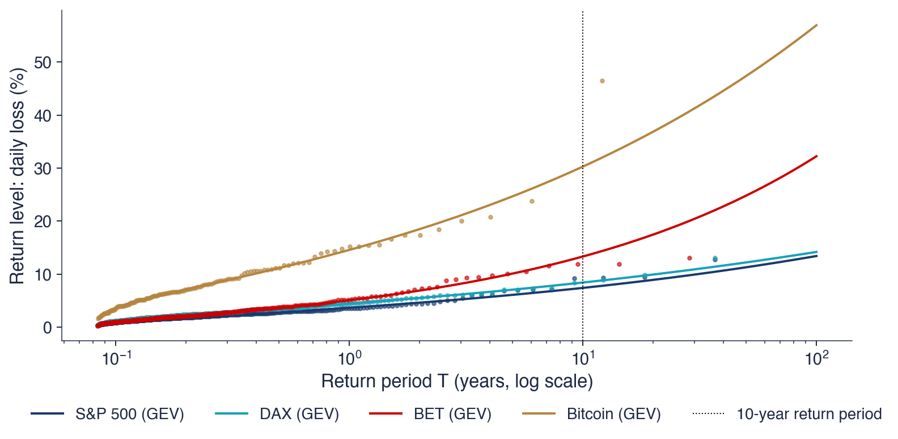
Linii: return levels GEV; puncte: maximele lunare observate, la perioadele lor empirice de revenire
Dincolo de lungimea eșantionului (36,7 ani pentru S&P 500, 12 pentru Bitcoin), curbele sînt extrapolare
Tabelul dă pierderea zilnică, în procente, depășită în medie o dată la 1, 10 și 50 de ani, cu un interval de 95% pentru nivelul de 10 ani obținut prin bootstrap al maximelor lunare, cu 200 de eșantioane, și le compară cu cea mai mare pierdere observată și cu lungimea eșantionului. Pentru S&P 500, nivelul de 1 an este 3,7%, cel de 10 ani 7,4%, cu intervalul \([6{,}2; 8{,}9]\), iar cel de 50 de ani 11,3%; cea mai mare pierdere observată în 36,7 ani este 12,8%.
Pentru DAX, nivelul de 10 ani este 8,4%, iar cel de 50 de ani 12,2%, față de o pierdere maximă de 13,1%. Pentru Bitcoin nivelurile sînt mult mai mari: 14,6% pentru 1 an, 30,3% pentru 10 ani, cu intervalul \([21{,}2; 41{,}1]\), și 47,4% pentru 50 de ani, aproape de cea mai mare pierdere observată, 46,5% în 12 ani de date.
BET se deosebește de celelalte serii. Cu \(\hat\xi = 0{,}36\), nivelul lui de 10 ani este 13,3%, cu intervalul \([10{,}3; 17{,}5]\), iar cel de 50 de ani 24,8%, aproape dublul celei mai mari pierderi observate în 28,5 ani, 13,1%. O mică modificare a lui \(\hat\xi\) produce o modificare mare departe în coadă, deoarece \(\xi\) intră în return level-ul (5.8) ca exponent. Lățimea intervalelor crește cu perioada de revenire, iar nivelurile de 50 de ani, dincolo de lungimea eșantionului sau aproape de ea, sînt cifrele cele mai puțin sigure ale tabelului.
Pe scurt
1 an
10 ani
interval 95%
50 de ani
cea mai mare observată
ani de date
S&P 500
\(3{,}7\)
\(7{,}4\)
\([6{,}2; 8{,}9]\)
\(11{,}3\)
\(12{,}8\)
\(36{,}7\)
DAX
\(4{,}5\)
\(8{,}4\)
\([7{,}1; 9{,}9]\)
\(12{,}2\)
\(13{,}1\)
\(36{,}7\)
BET
\(5{,}1\)
\(13{,}3\)
\([10{,}3; 17{,}5]\)
\(24{,}8\)
\(13{,}1\)
\(28{,}5\)
Bitcoin
\(14{,}6\)
\(30{,}3\)
\([21{,}2; 41{,}1]\)
\(47{,}4\)
\(46{,}5\)
\(12\)
Pierderea zilnică (%) depășită în medie o dată la \(T\) ani; intervalul: bootstrap al maximelor lunare (200 de eșantioane)
BET: cu \(\hat\xi = 0{,}36\), nivelul de 50 de ani este \(24{,}8\%\), aproape dublul celei mai mari pierderi observate
o mică modificare a lui \(\hat\xi\) schimbă mult valorile din coada îndepărtată
Maximele normalizate pe blocuri converg, atunci cînd converg, către distribuția GEV (5.7), a cărei formă \(\xi\) decide tipul cozii. Maximele lunare ale pierderilor zilnice dau \(\hat\xi\) între 0,17 și 0,36, toate semnificativ pozitive: maximele sînt de tip Fréchet. Return levels (5.8) transformă ajustarea în pierderi așteptate o dată la \(T\) ani, 7,4% pentru S&P 500 la 10 ani, dar departe dincolo de eșantion ele depind puternic de \(\hat\xi\). Folosirea unei singure pierderi pe lună risipește informația din coadă; secțiunea următoare folosește fiecare pierdere de peste un prag înalt.
Peaks over threshold și distribuția GPD
Metoda peaks over threshold (POT, vîrfuri peste prag) păstrează fiecare pierdere de peste un prag înalt și modelează excesele peste prag. O a doua teoremă limită spune că aceste excese urmează, aproximativ, distribuția Pareto generalizată (GPD, generalised Pareto distribution), cu același parametru de formă ca GEV. Secțiunea explică teorema, alegerea pragului, ajustarea la cele patru serii și estimatorul cozii, care transformă ajustarea în probabilități ale pierderilor mari.
Metoda POT fixează un prag (threshold) înalt \(u\) și păstrează fiecare pierdere de peste el. Excesul peste \(u\) este \(Y = L - u\), știind că \(L > u\), iar distribuția lui este
\[F_u(y) = P(L - u \le y \mid L > u), \qquad y \ge 0.\]
Obiectul metodei este \(F_u\), legea condiționată a distanței pe care o parcurge o pierdere după ce a trecut de prag.
Avantajul față de block maxima este folosirea datelor. Block maxima păstrează o singură pierdere pe bloc, chiar dacă un bloc conține mai multe pierderi mari, iar blocul următor niciuna. POT păstrează toate pierderile mari, deci coada este estimată din mai multe observații. Într-o lună de criză cu cinci pierderi peste prag, toate cinci intră în ajustarea POT, în timp ce în ajustarea block maxima intră doar una.
POT este metoda care stă la baza majorității estimărilor EVT pentru VaR și ES în managementul riscului; McNeil & Frey (2000) și McNeil, Frey & Embrechts (2015) o dezvoltă în acest scop. Laurens de Haan, din fotografie, este unul dintre autorii teoremei limită pe care se sprijină metoda.
Pe scurt
POT (peaks over threshold, vîrfuri peste prag): fixăm un prag înalt \(u\) și păstrăm fiecare pierdere de peste el
excesul peste \(u\): \(Y = L - u\), știind că \(L > u\)
distribuția excesului: \(F_u(y) = P(L - u \le y \mid L > u)\)
Folosește toate pierderile mari, nu una pe bloc: mai multe date în coadă
Dacă maximele lui \(L\) converg către o GEV cu forma \(\xi\), atunci, pentru praguri înalte, distribuția excesului este aproximativ o distribuție Pareto generalizată (GPD) (Pickands, 1975; Balkema & de Haan, 1974):\(F_u(y) \approx G_{\xi, \beta(u)}(y)\), cu
pentru \(y \ge 0\) (și \(y \le -\beta/\xi\) dacă \(\xi < 0\)), iar \(G_{0,\beta}(y) = 1 - e^{-y/\beta}\) pentru \(\xi = 0\). Aici \(y\) este excesul peste \(u\); forma \(\xi\) este aceeași ca la GEV; scala \(\beta > 0\) depinde de prag.
Forma își păstrează semnificația. Pentru \(\xi > 0\), excesele au o coadă de tip Pareto cu \(\alpha = 1/\xi\); pentru \(\xi = 0\) sînt exponențiale; pentru \(\xi < 0\) sînt mărginite. Cele două teoreme limită sînt două perspective asupra aceleiași cozi: domeniul de atracție al maximelor și legea exceselor sînt determinate amîndouă de coada lui \(F\).
GPD are media \(\beta/(1 - \xi)\) dacă \(\xi < 1\) și varianță finită dacă \(\xi < 1/2\). Funcția ei mean excess este liniară: pentru un nivel \(v > u\),\(e(v) = (\beta + \xi(v - u))/(1 - \xi)\). Aceasta este dreapta ajustată peste prag în graficele mean excess din Secțiunea 4 și motivul pentru care un grafic mean excess liniar susține un model GPD.
Pe scurt
Dacă maximele lui \(L\) converg către o GEV cu forma \(\xi\), atunci pentru praguri înalte
Graficul arată distribuția GPD cu scala \(\beta = 1\) și patru forme, \(\xi = -0{,}3\), 0, 0,3 și 0,6. În stînga sînt densitățile, pe axe liniare; în dreapta, funcțiile de supraviețuire \(P(Y > y)\), pe axe log-log.
Densitățile seamănă în apropiere de 0, pornind toate de la 1 și scăzînd; principala diferență vizibilă este că densitatea cu \(\xi = -0{,}3\) ajunge la zero în \(y = -\beta/\xi \approx 3{,}3\). Cozile sînt foarte diferite. Pe axe log-log, numai curbele cu \(\xi > 0\) devin drepte, cu pantele \(-1/\xi\); cazul exponențial, \(\xi = 0\), se curbează în jos, iar cazul mărginit coboară vertical la capătul lui.
Curba cu \(\xi = 0{,}3\) corespunde unui tail index \(\alpha = 1/0{,}3 \approx 3{,}3\), apropiat de valorile estimate pentru randamentele acțiunilor. Ca la GEV, diferența dintre forme este invizibilă în centru și decisivă în coadă.
Pe scurt
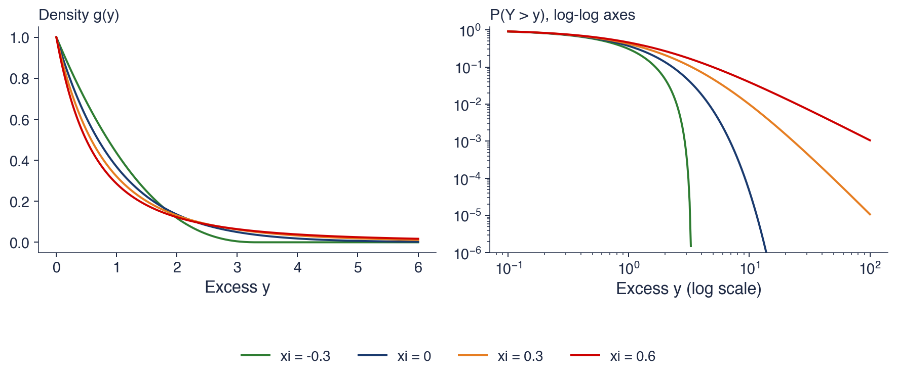
\(\beta = 1\); densitățile seamănă lîngă 0, cozile nu: pe axe log-log, doar \(\xi > 0\) dă drepte
\(\xi = 0{,}3\) corespunde unui tail index \(\alpha \approx 3{,}3\), apropiat de cel al randamentelor acțiunilor
Alegerea lui \(u\) este același compromis ca alegerea lui \(k\) pentru estimatorul Hill. Un prag prea jos include observații pentru care aproximarea GPD este slabă, iar estimările sînt deplasate. Un prag prea înalt lasă puține excese, iar estimările au varianță mare.
Două instrumente grafice ajută. Graficul mean excess trebuie să fie aproximativ liniar peste \(u\), ca pentru o GPD. Graficul stabilității parametrilor arată \(\hat\xi\) în funcție de \(u\); peste un prag potrivit, \(\hat\xi\) nu ar trebui să se schimbe mult cînd \(u\) crește în continuare, deoarece forma unei cozi GPD nu depinde de prag.
Regula folosită în capitol este \(u =\) cuantila de 90% a pierderilor, astfel încît în ajustare intră cele mai mari 10% dintre pierderi. McNeil & Frey (2000) folosesc \(k = 100\) de excese în ferestre de \(n = 1000\) de zile, aceeași proporție. Ca la estimatorul Hill, regula se fixează dinainte, iar slide-ul următor îi verifică robustețea.
Pe scurt
Același compromis ca la alegerea lui \(k\) pentru estimatorul Hill
\(u\) prea jos: aproximarea GPD este slabă (deplasare); \(u\) prea sus: puține excese (varianță)
Instrumente grafice
graficul mean excess: aproximativ liniar peste \(u\)
graficul stabilității parametrilor: \(\hat\xi\) nu ar trebui să se schimbe mult cînd \(u\) crește în continuare
Regula folosită aici: \(u =\) cuantila de 90% a pierderilor, adică cele mai mari 10% dintre pierderi
McNeil & Frey (2000) folosesc \(k = 100\) de excese în ferestre de \(n = 1000\) de zile, aceeași proporție
Panoul din stînga al graficului arată \(\hat\xi\) cu intervalul de 95% pentru praguri de la cuantila de 80% la cea de 99% a pierderilor, pentru S&P 500 și BET. Panoul din dreapta arată VaR 1% EVT obținut cu fiecare prag. Linia verticală punctată marchează cuantila de 90%.
Între cuantilele de 85% și 95%, estimarea formei pentru S&P 500 variază între 0,13 și 0,22, în timp ce VaR 1% rămîne între 3,25% și 3,33%. VaR se modifică foarte puțin, deși \(\hat\xi\) se modifică cu mai mult decît eroarea lui standard. Motivul este că VaR 1% se află în interiorul domeniului datelor: o schimbare a lui \(\xi\) este compensată de o schimbare a scalei \(\beta\), iar coada ajustată trece prin aceleași observații.
La pragurile cele mai înalte, intervalele se lărgesc brusc, iar pentru BET estimarea lui \(\xi\) coboară sub 0 la cuantila de 99%, unde rămîn doar cîteva zeci de excese. Aceasta este latura varianței din compromis. Cuantila de 90% se află în zona stabilă pentru ambele serii.
Pe scurt
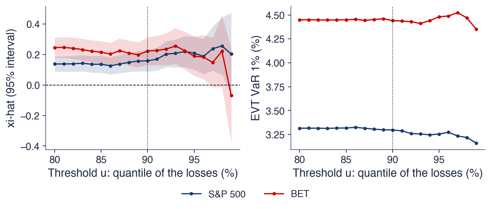
Stînga: \(\hat\xi\) cu interval de 95% pentru \(u\) de la cuantila de 80% la cea de 99%; dreapta: VaR 1% EVT pentru aceleași praguri
Între cuantilele de 85% și 95%: S&P 500 \(\hat\xi \in [0{,}13; 0{,}22]\), VaR 1% \(\in [3{,}25; 3{,}33]\%\); VaR se modifică foarte puțin
Tabelul dă ajustările prin verosimilitate maximă ale GPD la excesele \(L - u\) peste cuantila de 90% (Davison & Smith, 1990). Pentru S&P 500, pragul este \(u = 1{,}16\%\), cu \(N_u = 924\) de excese din \(n = 9\,240\) de zile; forma este \(\hat\xi = 0{,}16\), cu eroarea standard 0,04, iar scala \(\hat\beta = 0{,}769\). DAX are \(\hat\xi = 0{,}12\), BET 0,22, iar Bitcoin 0,12, cu erori standard de 0,04–0,05, obținute din curbura log-verosimilității.
Toate cele patru forme sînt pozitive și mai mici decît 0,5: cozi groase cu varianță finită. Tail index-urile implicate, \(1/\hat\xi\), sînt 6,3 pentru S&P 500, 8,5 pentru DAX, 4,5 pentru BET și 8,5 pentru Bitcoin.
Aceste valori sînt mai mari decît estimările Hill, care au folosit cele mai mari 2,5% dintre pierderi. Cei doi estimatori privesc părți diferite ale cozii: peste cuantila de 90%, o GPD cu scala liberă \(\beta\) potrivește curbura cozii moderate cu un \(\xi\) mai mic, în timp ce estimatorul Hill impune o formă Pareto pură peste un prag mai înalt. Tail index-ul este greu de estimat precis, iar o analiză atentă raportează mai mulți estimatori. Pentru măsurile de risc din interiorul datelor sau din apropierea lor, discrepanța contează mai puțin, așa cum a arătat graficul stabilității parametrilor.
Pe scurt
\(n\)
\(u\) (%)
\(N_u\)
\(\hat\xi\)
SE
\(\hat\beta\)
\(1/\hat\xi\)
S&P 500
9 240
\(1{,}16\)
924
\(0{,}16\)
\(0{,}04\)
\(0{,}769\)
\(6{,}3\)
DAX
9 288
\(1{,}50\)
929
\(0{,}12\)
\(0{,}04\)
\(0{,}927\)
\(8{,}5\)
BET
7 243
\(1{,}38\)
725
\(0{,}22\)
\(0{,}05\)
\(1{,}018\)
\(4{,}5\)
Bitcoin
4 384
\(3{,}33\)
439
\(0{,}12\)
\(0{,}05\)
\(2{,}663\)
\(8{,}5\)
Verosimilitate maximă pe excesele \(L - u\)Davison & Smith (1990); SE din curbura log-verosimilității
\(\hat\xi\) între \(0{,}12\) și \(0{,}22\): cozi groase cu varianță finită (\(\xi < 0{,}5\)) pentru toate cele patru serii
\(1/\hat\xi\) este mai mare decît \(\hat\alpha\) Hill (2,5% din pierderi)
peste cuantila de 90%, o GPD cu scala liberă \(\beta\) are nevoie de un \(\xi\) mai mic
tail index-ul este greu de estimat precis: raportați mai mulți estimatori
Graficele PP și QQ verifică ajustarea GPD la excesele S&P 500 peste \(u\). Graficul PP stă pe prima bisectoare pe tot intervalul. Graficul QQ stă pe dreaptă pînă la excese de aproximativ 4%, adică pierderi de aproximativ 5%; dincolo de acest nivel punctele se împrăștie în jurul dreptei.
Cel mai mare exces, 11,6%, din martie 2020, este comparat cu o cuantilă ajustată de 11,1%. Modelul nu ratează cu mult cea mai extremă zi a eșantionului: modelul POT, ajustat pe 924 de excese, plasează crahul COVID-19 aproape de locul în care ar trebui să se afle printre ele.
Ca întotdeauna la graficele QQ pentru cozi groase, ultimele cîteva puncte au o variabilitate de eșantionare mare: chiar și un model corect produce puncte împrăștiate în partea de sus. Acordul pînă la 4% și abaterea moderată de dincolo de acest nivel susțin GPD ca descriere a cozii S&P 500.
Pe scurt
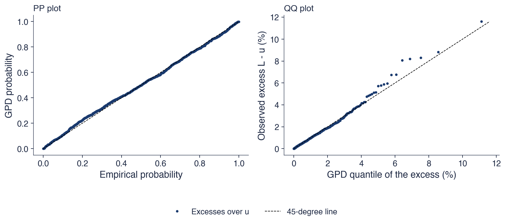
Excesele S&P 500 peste \(u\): punctele graficului PP stau pe dreaptă; cele ale graficului QQ, pînă la excese de circa 4%
Cel mai mare exces (\(11{,}6\%\), martie 2020) față de o cuantilă ajustată de \(11{,}1\%\); portat din Quantlet-urile SFE SFEtailGPareto_pp și _qq
GPD descrie excesele condiționat de \(L > u\); măsurile de risc au nevoie de probabilitatea necondiționată \(P(L > x)\). Pentru \(x > u\),\(P(L > x) = P(L > u)\,P(L > x \mid L > u)\). Primul factor se estimează prin proporția pierderilor de peste prag, \(N_u/n\), iar al doilea prin GPD. Rezultatul este estimatorul cozii
unde \(N_u\) este numărul pierderilor de peste \(u\),\(n\) volumul eșantionului, iar paranteza este probabilitatea GPD de a depăși \(x\), știind că \(u\) este depășit.
Estimatorul combină două surse de informație. Probabilitatea de a trece de prag se estimează din frecvența istorică; dincolo de prag preia controlul legea de putere ajustată. Modelul se folosește numai acolo unde teoria îl justifică, peste \(u\), și se prelungește continuu dincolo de cea mai mare observație.
Inversarea relației \(\hat{\bar F}(x) = p\) dă VaR, iar integrarea cozii dincolo de VaR dă ES; ambele sînt derivate în Secțiunea 7. Același estimator dă și timpii de așteptare pentru orice nivel de pierdere, utilizare prezentată la sfîrșitul acestei secțiuni.
Pe scurt
Pentru \(x > u\): \(P(L > x) = P(L > u)\,P(L > x \mid L > u)\)
estimăm \(P(L > u)\) prin \(N_u/n\) și \(P(L > x \mid L > u)\) prin GPD
Graficul arată, pentru cele patru serii, funcția de supraviețuire empirică peste \(u\) (puncte), estimatorul EVT al cozii (5.10) (linia albastră) și funcția de supraviețuire a distribuției Normale (linia roșie întreruptă), pe axe log-log. Liniile orizontale punctate marchează probabilitățile \(p = 1\%\) și \(p = 0{,}1\%\), nivelurile pentru VaR 1% și VaR 0,1%.
Coada GPD urmează datele pînă la probabilități de aproximativ \(10^{-4}\), adică pînă la cele cîteva pierderi maxime ale fiecărui eșantion. Coada distribuției Normale se îndepărtează de date înainte de \(p = 1\%\): la nivelul VaR 1%, modelul Normal subestimează deja pierderea, iar la \(p = 0{,}1\%\) diferența este mare. Fiecare panou arată forma ajustată, de la \(\xi = 0{,}12\) pentru DAX și Bitcoin la \(\xi = 0{,}22\) pentru BET.
Cozile ajustate arată și rolul extrapolării. Dincolo de ultimul punct, linia albastră continuă spre probabilități mai mici, unde nu există date. Această prelungire este ceea ce adaugă EVT simulării istorice, iar credibilitatea ei depinde de stabilitatea lui \(\xi\).
Pe scurt
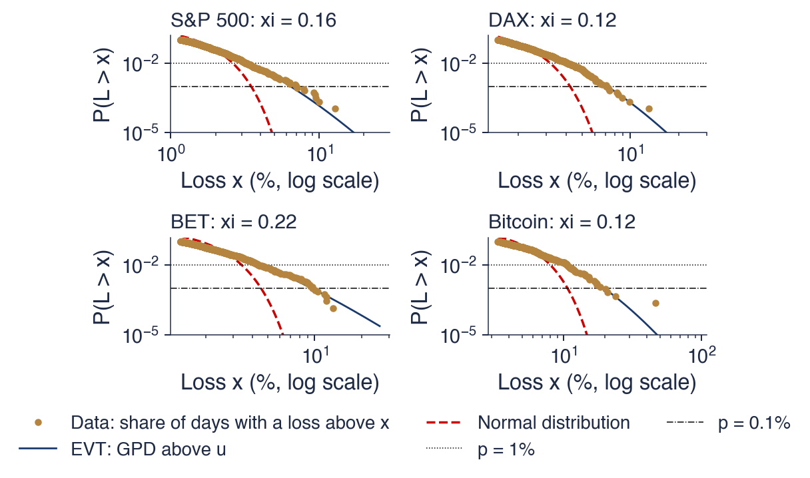
Puncte: proporția zilelor cu o pierdere peste \(x\) (peste \(u\)); albastru: estimatorul EVT al cozii; roșu: distribuția Normală; linii punctate la \(p = 1\%\) și \(0{,}1\%\)
GPD urmează datele pînă la \(10^{-4}\); coada distribuției Normale se îndepărtează de ele înainte de \(p = 1\%\)
Tabelul revine la zilele de crah din Secțiunea 1 și le dă timpii de așteptare în distribuția Normală și cu estimatorul EVT al cozii, \(1/(\hat{\bar F}(x) \times 252)\) ani (365 pentru Bitcoin), cu ajustarea POT pe întregul eșantion. Pierderea S&P 500 de 12,8% din 16 martie 2020 are un timp de așteptare de \(10^{27}\) ani în distribuția Normală și de 89 de ani prin EVT. Pentru pierderea DAX de 13,1%, cifrele sînt \(10^{19}\) și 85 de ani; pentru pierderea Bitcoin de 46,5%, \(10^{38}\) și 237 de ani.
EVT face din zilele COVID-19 evenimente rare, dar plauzibile, de tipul celor care apar o dată într-o viață; distribuția Normală le face imposibile. Pentru BET, pierderea de 13,1% din 7 ianuarie 2009 are un timp de așteptare EVT de 12 ani. Coada BET, cu \(\hat\xi = 0{,}22\), este cea mai groasă dintre cele patru, iar o pierdere de această mărime este de așteptat aproximativ o dată pe deceniu.
Lunea Neagră se află în afara datelor, care încep în 1990. Randamentul ei logaritmic de −22,3% are, în distribuția Normală, un timp de așteptare de \(10^{84}\) ani. Extrapolat cu estimatorul cozii S&P 500, el primește un timp de așteptare de aproximativ 1 600 de ani. Cifra este mult dincolo de cei 36,7 ani de date și are o incertitudine mare, dar este un răspuns finit și interpretabil, pe care distribuția Normală nu îl poate da.
Pe scurt
o dată la (ani)
ziua
pierdere (%)
distribuția Normală
EVT
S&P 500
16 martie 2020
\({-12{,}8}\)
\(10^{27}\)
\(89\)
DAX
12 martie 2020
\({-13{,}1}\)
\(10^{19}\)
\(85\)
BET
7 ianuarie 2009
\({-13{,}1}\)
\(10^{16}\)
\(12\)
Bitcoin
12 martie 2020
\({-46{,}5}\)
\(10^{38}\)
\(237\)
S&P 500, Lunea Neagră
19 octombrie 1987
\(-22{,}3\)
\(10^{84}\)
\(1\,600\)
Timpul de așteptare EVT: \(1/(\hat{\bar F}(x) \times 252)\) ani (365 pentru Bitcoin), cu ajustarea POT pe întregul eșantion
Pentru EVT, zilele COVID-19 sînt evenimente rare, dar plauzibile, de tipul „o dată într-o viață”; pentru distribuția Normală sînt imposibile
1987 este în afara datelor noastre: EVT îl extrapolează la un timp de așteptare de circa 1 600 de ani, cu o incertitudine mare
Excesele peste un prag înalt urmează, aproximativ, distribuția GPD (5.9), cu aceeași formă \(\xi\) ca GEV. Cu pragul la cuantila de 90%, cele patru serii au \(\hat\xi\) între 0,12 și 0,22, ajustările trec verificările PP și QQ, iar estimatorul cozii (5.10) urmează datele pînă la probabilități de \(10^{-4}\). Tail index-ul implicat de GPD este mai mare decît estimarea Hill, ceea ce arată că coada îndepărtată este greu de estimat precis. Secțiunea următoare inversează estimatorul cozii pentru a obține VaR și ES și le compară cu simularea istorică și cu distribuția Normală.
VaR și ES prin teoria valorilor extreme
Secțiunea transformă ajustarea POT în cele două măsuri de risc din Secțiunea 1. Ea derivă formulele EVT pentru VaR și ES, parcurge exemplul S&P 500, compară EVT cu simularea istorică și cu distribuția Normală la nivelurile folosite în practică și departe în coadă și testează cele trei metode în afara eșantionului, pe perioada 2020–2026.
unde ultima egalitate este valabilă pentru distribuțiile continue. VaR este cuantila superioară de ordin \(p\) a pierderilor; ES face media tuturor cuantilelor de dincolo de ea.
Trei metode le estimează din pierderile zilnice. Simularea istorică (historical simulation) ia cuantila empirică și media pierderilor de dincolo de ea, fără niciun model. Metoda Normală pune \(\mathrm{VaR}_p = \hat\mu_L + \hat\sigma z_{1-p}\) și \(\mathrm{ES}_p = \hat\mu_L + \hat\sigma\,\varphi(z_{1-p})/p\), unde \(\hat\mu_L\) și \(\hat\sigma\) sînt media și abaterea standard a pierderilor, \(z_{1-p}\) este cuantila de ordin \(1-p\) a distribuției \(N(0, 1)\), iar \(\varphi\) densitatea distribuției Normale standard. Metoda EVT, bazată pe POT, inversează estimatorul cozii (5.10).
Nivelurile folosite în practică sînt VaR 1% pentru riscul zilnic și pentru backtesting-ul Basel, ES 2,5% pentru capitalul aferent riscului de piață în cadrul Basel (MAR33) și VaR 0,1% pentru analiza de stres. Cele trei niveluri se află la adîncimi tot mai mari în coadă, iar comparația metodelor depinde de adîncime.
Pe scurt
VaR și ES din Secțiunea 1, scrise pentru pierderile \(L = -r\), cu funcția de repartiție \(F_L\)
\(\mathrm{VaR}_p = F_L^{-1}(1 - p) = -q_p(r)\)
\(\mathrm{ES}_p = \dfrac{1}{p}\displaystyle\int_0^p \mathrm{VaR}_s\,ds = E[L \mid L \ge \mathrm{VaR}_p]\) pentru distribuții continue
Trei moduri de a le estima din pierderile zilnice
simularea istorică: cuantila empirică și media pierderilor de dincolo de ea
\(\hat\mu_L\), \(\hat\sigma\): media și abaterea standard a pierderilor; \(z_{1-p}\): cuantila de ordin \(1-p\) a distribuției \(N(0, 1)\); \(\varphi\): densitatea distribuției Normale standard
EVT (POT): inversăm estimatorul cozii
Nivelurile folosite în practică: VaR 1% (zilnic, backtesting Basel), ES 2,5% Comitetul de la Basel (MAR33), VaR 0,1% (stres)
Rezolvînd \(\frac{N_u}{n}\big(1 + \xi\,\frac{x - u}{\beta}\big)^{-1/\xi} = p\) în raport cu \(x\), obținem VaR EVT:
\[\mathrm{VaR}_p = u + \frac{\beta}{\xi}\Big[\Big(\frac{n p}{N_u}\Big)^{-\xi} - 1\Big], \qquad p < N_u/n.\]
(5.12)
Formula este pragul plus o cuantilă GPD a excesului. Raportul \(np/N_u\) este probabilitatea țintă raportată la proporția exceselor: arată cît de departe în coada condiționată se află cuantila. Condiția \(p < N_u/n\) asigură că VaR se află peste prag, acolo unde se aplică modelul.
ES rezultă dintr-o proprietate de stabilitate a GPD: excesul peste un nivel mai înalt \(v = \mathrm{VaR}_p\) are tot distribuție GPD, cu același \(\xi\), iar media lui, după formula excesului mediu, este \((\beta + \xi(\mathrm{VaR}_p - u))/(1 - \xi)\). Adunînd-o la VaR, obținem
Cu \(\xi > 0\), departe în coadă, VaR crește nelimitat, iar al doilea termen din (5.13) devine neglijabil: \(\mathrm{ES}_p/\mathrm{VaR}_p \to 1/(1 - \xi)\). Pentru \(\xi = 0{,}2\), ES ajunge să fie cu 25% peste VaR. Într-o coadă groasă, ES este un multiplu fix al VaR la niveluri adînci, iar multiplul depinde numai de formă.
Pe scurt
Rezolvăm \(\dfrac{N_u}{n}\Big(1 + \xi\,\dfrac{x - u}{\beta}\Big)^{-1/\xi} = p\) în raport cu \(x\)
\(\mathrm{VaR}_p = u + \dfrac{\beta}{\xi}\Big[\Big(\dfrac{n p}{N_u}\Big)^{-\xi} - 1\Big]\), valabil pentru \(p < N_u/n\)
pragul plus o cuantilă GPD a excesului; \(np/N_u\): probabilitatea țintă raportată la proporția exceselor
Excesul peste \(\mathrm{VaR}_p\) are tot distribuție GPD, cu același \(\xi\): media lui este \((\beta + \xi(\mathrm{VaR}_p - u))/(1 - \xi)\)
Ajustarea pentru S&P 500 are \(n = 9\,240\),\(u = 1{,}163\%\),\(N_u = 924\) de excese (10,0% din eșantion), \(\hat\xi = 0{,}158\) și \(\hat\beta = 0{,}769\), deci \(\hat\beta/\hat\xi = 4{,}860\). Pentru VaR 1%, \(np/N_u = 9\,240 \times 0{,}01/924 = 0{,}100\) și \(0{,}100^{-\hat\xi} = 1{,}439\). Atunci \(\mathrm{VaR}_{1\%} = 1{,}163 + 4{,}860\,(1{,}439 - 1) = 3{,}30\%\).
Pentru ES 2,5%, calculăm întîi VaR 2,5%: \(np/N_u = 0{,}250\), iar \(\mathrm{VaR}_{2{,}5\%} = 1{,}163 + 4{,}860\,(1{,}245 - 1) = 2{,}35\%\). Apoi (5.13) dă \(\mathrm{ES}_{2{,}5\%} = (2{,}35 + 0{,}769 - 0{,}158 \times 1{,}163)/(1 - 0{,}158) = 3{,}49\%\). În cele mai proaste 2,5% dintre zile, S&P 500 pierde în medie 3,49%.
Pentru VaR 0,1%, \(np/N_u = 0{,}010\),\(0{,}010^{-\hat\xi} = 2{,}072\), iar \(\mathrm{VaR}_{0{,}1\%} = 1{,}163 + 4{,}860 \times 1{,}072 = 6{,}37\%\). Trecerea de la 1% la 0,1% înmulțește probabilitatea țintă cu 1/10 și VaR cu aproximativ 1,9. Fiecare pas al calculului folosește numai cele cinci numere ale ajustării, ceea ce face ca VaR EVT să fie ușor de recalculat și de verificat.
Tabelul compară cele trei metode pentru VaR 1% și ES 2,5%. Pentru S&P 500, VaR 1% este 3,30% prin EVT, 3,15% prin simulare istorică și 2,60% prin distribuția Normală; ES 2,5% este 3,49%, 3,48% și 2,62%. Pentru Bitcoin, VaR 1% este 10,38%, 10,51% și 7,99%.
La aceste niveluri, EVT și simularea istorică diferă cu cel mult 0,14 puncte procentuale pentru toate cele patru serii. Cu 1% și 2,5% din cîteva mii de zile, dincolo de cuantilă se află între cîteva zeci și cîteva sute de observații, suficient pentru ca estimarea empirică să fie fiabilă, iar EVT, care netezește aceleași observații, coincide cu ea.
Metoda Normală dă valori prea mici. VaR 1% EVT este cu 27% mai mare decît valoarea Normală pentru S&P 500 și cu 31% pentru BET, iar ES 2,5% arată o marjă asemănătoare. În distribuția Normală, ES 2,5% este aproape egal cu VaR 1% (2,62% față de 2,60% pentru S&P 500), deoarece coada Normală de dincolo de cuantilă este subțire; în date, pierderile de dincolo de cuantilă sînt mai mari, iar diferența dintre metode este la fel de mare pentru ES ca pentru VaR. La nivelurile cerute de reglementare, lecția principală nu este EVT față de istoric, ci oricare dintre ele față de distribuția Normală.
Pe scurt
VaR 1% (%)
ES 2,5% (%)
EVT
istoric
Normal
EVT
istoric
Normal
S&P 500
\(3{,}30\)
\(3{,}15\)
\(2{,}60\)
\(3{,}49\)
\(3{,}48\)
\(2{,}62\)
DAX
\(3{,}95\)
\(4{,}02\)
\(3{,}16\)
\(4{,}13\)
\(4{,}15\)
\(3{,}18\)
BET
\(4{,}44\)
\(4{,}33\)
\(3{,}39\)
\(4{,}81\)
\(4{,}80\)
\(3{,}41\)
Bitcoin
\(10{,}38\)
\(10{,}51\)
\(7{,}99\)
\(10{,}90\)
\(10{,}84\)
\(8{,}03\)
La aceste niveluri, EVT și simularea istorică diferă cu cel mult \(0{,}14\) puncte procentuale: există destule date la 1% și 2,5%
Distribuția Normală subestimează riscul
VaR 1% EVT este cu \(27\%\) mai mare pentru S&P 500 și cu \(31\%\) mai mare pentru BET
Tabelul dă VaR 0,1%, pierderea depășită într-o zi din 1 000, prin patru metode (EVT prin POT, cuantila Hill–Weissman, simularea istorică și distribuția Normală), pentru cele patru serii și pentru cele patru acțiuni BVB din 2010, împreună cu cea mai mare pierdere observată. Pentru S&P 500, valorile sînt 6,37% (EVT), 6,92% (Hill), 6,94% (istoric) și 3,47% (Normal), față de o pierdere maximă de 12,8%.
Valoarea EVT este de aproximativ 1,8 ori mai mare decît valoarea Normală pentru S&P 500 și de 2,1 ori pentru BET (9,56% față de 4,52%). Pentru acțiunile BVB rapoartele sînt asemănătoare: Banca Transilvania are un VaR 0,1% EVT de 10,68%, față de 5,35% în distribuția Normală. La această adîncime, modelul Normal subestimează pierderea de aproximativ două ori.
VaR 0,1% istoric se bazează doar pe cele mai mari 3–9 pierderi, în funcție de lungimea eșantionului, deci se modifică ori de cîte ori o zi extremă intră în eșantion sau iese din el. EVT și estimatorul Hill netezesc aceste cîteva puncte cu un model al cozii. Cele două estimări bazate pe model diferă între ele: Hill dă valori mai mari decît POT pentru fiecare serie (pentru Bitcoin, 23,30% față de 19,61%); pentru cele patru piețe, tail index-urile Hill sînt mai mici decît indicii \(1/\hat\xi\) implicați de ajustările GPD din Secțiunea 6. Diferența măsoară incertitudinea de model care rămîne departe în coadă.
Pe scurt
EVT (POT)
Hill
istoric
Normal
cea mai mare pierdere
S&P 500
\(6{,}37\)
\(6{,}92\)
\(6{,}94\)
\(3{,}47\)
\(12{,}8\)
DAX
\(7{,}17\)
\(8{,}37\)
\(6{,}97\)
\(4{,}21\)
\(13{,}1\)
BET
\(9{,}56\)
\(10{,}69\)
\(9{,}64\)
\(4{,}52\)
\(13{,}1\)
Bitcoin
\(19{,}61\)
\(23{,}30\)
\(18{,}05\)
\(10{,}65\)
\(46{,}5\)
OMV Petrom (SNP)
\(8{,}89\)
\(9{,}29\)
\(8{,}32\)
\(4{,}94\)
\(15{,}8\)
BRD
\(8{,}39\)
\(8{,}93\)
\(7{,}85\)
\(5{,}07\)
\(18{,}2\)
Banca Transilvania (TLV)
\(10{,}68\)
\(12{,}10\)
\(10{,}50\)
\(5{,}35\)
\(22{,}2\)
Transgaz (TGN)
\(8{,}29\)
\(9{,}18\)
\(8{,}23\)
\(4{,}68\)
\(10{,}1\)
VaR 0,1% (%): pierderea depășită într-o zi din 1 000; acțiunile BVB din 2010
VaR EVT este de circa \(1{,}8\) ori mai mare decît cel Normal pentru S&P 500 și de \(2{,}1\) ori pentru BET
VaR 0,1% istoric se bazează doar pe cele mai mari 3–9 pierderi; EVT și Hill le netezesc cu un model al cozii
Comparația în eșantion nu poate spune care metodă prezice mai bine. Testul în afara eșantionului estimează fiecare VaR 1% pe pierderile S&P 500 din 1990–2019 și îl compară cu pierderile zilnice de după 2019. Graficul arată aceste pierderi, împreună cu nivelurile estimate: VaR 1% Normal la 2,53%, istoric la 3,08%, EVT la 3,20% și VaR 0,1% EVT la 5,96%.
Un VaR 1% bun este depășit în aproximativ 1% din zilele de test; cu 1 687 de zile de test, aceasta înseamnă 16,9 zile. Graficul arată unde cad depășirile: cele mai multe în februarie–martie 2020, altele în 2022 și în aprilie 2025. Linia Normală, cea mai joasă, este depășită cel mai des.
Graficul arată și gruparea depășirilor. Un VaR necondiționat corect ar trebui depășit la momente aleatoare; aici depășirile vin în rafale, semnul vizual că un VaR constant ignoră variațiile volatilității. Slide-ul următor le numără.
Pe scurt
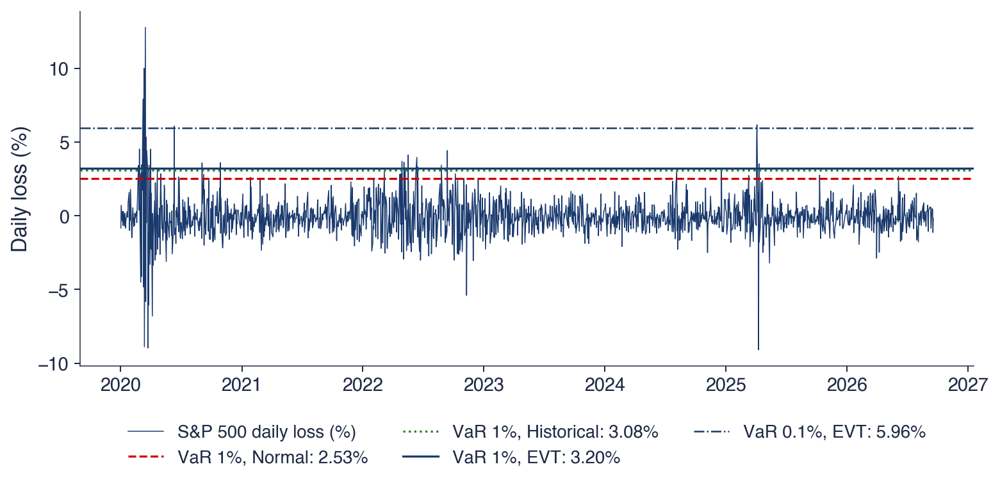
Pierderile zilnice ale S&P 500 după 2019, comparate cu VaR 1% al celor trei metode, toate estimate pe perioada 1990–2019
Un VaR 1% bun este depășit în circa 1% din zilele de test, aici \(16{,}9\) zile
Tabelul numără, pentru fiecare serie, zilele de test de după 2019 în care pierderea a depășit VaR estimat pe datele anterioare, la nivelurile de 1% și 0,1%. Pentru S&P 500, cu 1 687 de zile de test, se așteaptă 16,9 depășiri ale VaR 1%; EVT are 25, simularea istorică 26, iar metoda Normală 44. La 0,1% se așteaptă 1,7 depășiri; EVT are 5, simularea istorică 3, iar metoda Normală 23.
VaR Normal este depășit mult prea des la fiecare serie, iar eșecul este cel mai grav la 0,1%: 23 de zile în loc de 1,7 pentru S&P 500, 8 în loc de 1,7 pentru DAX și 8 în loc de 2,5 pentru Bitcoin. VaR EVT și VaR istoric sînt apropiate între ele la ambele niveluri. Pentru S&P 500 ambele sînt peste valoarea așteptată, din cauza episodului din 2020; pentru BET ambele sînt sub ea (4 și 5 depășiri, față de 16,7 așteptate), deoarece anii de test au fost calmi în comparație cu perioada de estimare.
Erorile de sens opus ale S&P 500 și BET au aceeași cauză. Un VaR estimat o singură dată, din coada necondiționată, ignoră variația volatilității: este prea mic într-o criză și prea mare în anii calmi. Remediul este EVT condiționată, care aplică POT randamentelor standardizate cu o volatilitate GARCH (McNeil & Frey, 2000). Modelele GARCH sînt subiectul Capitolului 9, iar backtesting-ul VaR și ES, al Capitolului 10.
Pe scurt
VaR 1%
VaR 0,1%
zile de test
așteptat
EVT
ist.
Normal
așteptat
EVT
ist.
Normal
S&P 500
1 687
\(16{,}9\)
25
26
44
\(1{,}7\)
5
3
23
DAX
1 710
\(17{,}1\)
15
12
31
\(1{,}7\)
2
2
8
BET
1 674
\(16{,}7\)
4
5
13
\(1{,}7\)
0
1
4
Bitcoin
2 453
\(24{,}5\)
8
10
23
\(2{,}5\)
1
1
8
VaR Normal este depășit mult prea des, mai ales la 0,1%: 23 de zile în loc de \(1{,}7\) pentru S&P 500
VaR EVT și VaR istoric (ist.) sînt apropiate între ele; S&P 500 peste valoarea așteptată (episodul din 2020), BET sub ea (ani liniștiți)
Un VaR estimat o singură dată ignoră variația volatilității în timp: EVT condiționată (GARCH + POT) McNeil & Frey (2000), Capitolele 9 și 10
EVT oferă un model fundamentat al cozii, derivat din teoreme limită, nu ales din comoditate, și extrapolează dincolo de cea mai mare pierdere observată. Ea dă estimări stabile ale VaR și ES la 0,1%, acolo unde simularea istorică are doar cîteva puncte, și timpi de așteptare finiți și interpretabili pentru evenimente precum crahul din 1987.
EVT nu poate elimina incertitudinea cozii îndepărtate. În acest capitol, forma \(\hat\xi\) are o eroare standard de 0,04–0,06, iar return levels de dincolo de eșantion au intervale largi: nivelul de 50 de ani al BET, de exemplu, este aproape dublul celei mai mari pierderi observate. Estimatori diferiți ai tail index-ului, Hill și GPD, dau valori diferite. EVT face incertitudinea explicită; nu o elimină.
EVT presupune pierderi i.i.d. sau măcar o coadă stabilă în timp. Pentru riscul zilnic, ipoteza nu este satisfăcută din cauza volatility clustering, iar remediul standard este aplicarea EVT pe randamente împărțite la o volatilitate GARCH (Capitolul 9). Pele, Lazar & Mazurencu-Marinescu-Pele (2019) dezvoltă o abordare alternativă a ES, bazată pe entropia cozii. Sinteze despre EVT în finanțe sînt Rocco (2014) și McNeil, Frey & Embrechts (2015), cap. 5.
Pe scurt
Poate: să ofere un model teoretic fundamentat al cozii și să extrapoleze dincolo de cea mai mare pierdere observată
VaR și ES stabile la 0,1%, acolo unde simularea istorică are doar cîteva puncte
Nu poate: să elimine incertitudinea cozii îndepărtate
\(\hat\xi\) are aici o eroare standard de \(0{,}04\)–\(0{,}06\); return levels dincolo de eșantion au intervale largi
Presupune: pierderi i.i.d., sau măcar o coadă stabilă în timp
Formulele EVT (5.12) și (5.13) dau VaR și ES din cele cinci numere ale unei ajustări POT. La VaR 1% și ES 2,5%, EVT și simularea istorică coincid pînă la 0,14 puncte procentuale și ambele depășesc valorile Normale cu aproximativ 30%. La VaR 0,1%, EVT rămîne aproape de valoarea istorică, dar este de aproximativ două ori valoarea Normală și se sprijină pe întreaga coadă, nu pe cîteva zile. În afara eșantionului, VaR Normal este depășit mult prea des, în timp ce VaR EVT și VaR istoric greșesc în sensuri opuse în perioadele agitate și în cele calme, deoarece niciunul nu urmărește volatilitatea. Secțiunea următoare întreabă dacă însăși coada se poate schimba în timp.
AI pentru descoperire științifică
Secțiunea pornește de la o întrebare deschisă ridicată de rezultatele capitolului, dacă s-a schimbat coada pierderilor BET, și arată unde pot ajuta instrumentele AI un cercetător care o studiază și ce verificări nu pot înlocui.
S-a schimbat coada pierderilor BET pe măsură ce piața din București a crescut? Cu estimatorul Hill la \(k = 2{,}5\%\) din \(n\), perioada 1997–2009 dă \(\hat\alpha = 2{,}90\), cu eroarea standard bootstrap pe blocuri 0,33, iar perioada 2010–2026 dă \(\hat\alpha = 2{,}16\), cu eroarea standard bootstrap pe blocuri 0,27. Indicele mai mic de după 2010 indică o coadă mai groasă.
Diferența poate fi testată cu \(z = (\hat\alpha_1 - \hat\alpha_2)/\sqrt{\mathrm{SE}_1^2 + \mathrm{SE}_2^2}\), tratînd cele două perioade ca independente. Valoarea ei absolută este 1,73, sub 1,96: coada este mai groasă după 2010, dar diferența nu este semnificativă la 5%.
Întrebarea rămîne deschisă și din alt motiv. Pragul Hill \(L_{(k+1)}\) a scăzut de la 3,95% la 2,01%, odată cu volatilitatea pieței. Cele două perioade sînt comparate la niveluri diferite de pierdere, astfel încît schimbarea lui \(\hat\alpha\) poate reflecta o schimbare a volatilității, nu a formei cozii. Separarea celor două efecte cere standardizarea randamentelor cu volatilitatea lor înainte de estimarea cozii. Instrumentele AI pot accelera un astfel de studiu, dar nu înlocuiesc verificarea lui (Wang et al., 2023).
Pe scurt
S-a schimbat coada pierderilor BET pe măsură ce piața din București a crescut?
indicele Hill, \(k = 2{,}5\%\) din \(n\), 1997–2009: \(\hat\alpha = 2{,}90\) (SE pe blocuri \(0{,}33\))
2010–2026: \(\hat\alpha = 2{,}16\) (SE pe blocuri \(0{,}27\))
\(z = (\hat\alpha_1 - \hat\alpha_2)/\sqrt{\mathrm{SE}_1^2 + \mathrm{SE}_2^2} = -1{,}73\): o coadă mai groasă după 2010, dar nesemnificativă la 5% (\(|z| < 1{,}96\))
Motivul pentru care rămîne deschisă: pragul a scăzut de la \(3{,}95\%\) la \(2{,}01\%\) odată cu volatilitatea
schimbarea este în coadă sau în volatilitate?
Instrumentele AI pot accelera un astfel de studiu; nu înlocuiesc verificarea rezultatelor Wang et al. (2023)
Un asistent AI poate ajuta în trei etape. Pentru literatură, poate lista studiile despre tail index-urile de pe piețele emergente și poate rezuma metodele lor, ceea ce dă un punct de plecare pentru compararea BET cu piețe asemănătoare. Pentru cod, poate scrie o primă versiune a unei analize Hill și POT pe ferestre mobile, cu intervale bootstrap pe blocuri. Pentru robustețe, poate propune și implementa variante: alte praguri, randamente standardizate cu GARCH, alți indici BVB.
Exemplul de prompt de pe slide este precis: numește estimatorul, regula pentru \(k\), lungimea ferestrei, metoda bootstrap și lungimea blocului. Un prompt precis produce cod care poate fi verificat față de definițiile din acest capitol; unul vag produce cod ale cărui alegeri rămîn ascunse.
Rezultatul fiecărei etape este o ciornă. Lista de lucrări trebuie verificată referință cu referință, iar codul trebuie verificat pe rezultate cunoscute, de exemplu reproducînd estimarea BET pe întregul eșantion din tabelul Hill înainte de a-l folosi pe ferestre mobile.
Pe scurt
Literatura: lista studiilor despre tail index-urile de pe piețele emergente și rezumatul metodelor lor
Cod: o primă versiune a unei analize Hill și POT pe ferestre mobile, cu intervale bootstrap pe blocuri
Robustețe: alte praguri, randamente standardizate cu GARCH, alți indici BVB
Exemplu de prompt
Write a Python function that computes the Hill tail index of daily BET losses with k = 2.5% of n on rolling 5-year windows, with moving-block bootstrap standard errors (blocks of 20 days).
Mai multe erori sînt frecvente în analizele cozii generate cu AI. Prima este convenția de semn: pierderile sînt \(-r\), iar o estimare Hill calculată pe randamente, nu pe pierderi, măsoară coada cîștigurilor. A doua este parametrizarea din software: în scipy, genextreme folosește forma \(c = -\xi\), în timp ce genpareto folosește \(c = \xi\), deci o formă GEV citită fără schimbarea semnului are semnul greșit.
Regula pentru \(k\) sau \(u\) trebuie fixată înainte de a vedea rezultatul, nu ajustată pentru a obține o schimbare semnificativă. Cu multe praguri posibile, unele vor produce întîmplător o diferență semnificativă. Ferestrele mobile se suprapun, astfel încît estimările din ferestre vecine au în comun cea mai mare parte a datelor și nu sînt teste independente; un șir de estimări pe ferestre mobile care trece de mai multe ori de o bandă de semnificație nu reprezintă mai multe dovezi.
Fiecare referință propusă de un instrument AI trebuie să existe: DOI-ul fiecărei lucrări citate trebuie verificat, deoarece referințele inventate, cu titluri plauzibile, sînt o eroare cunoscută a modelelor de limbaj.
Pe scurt
Semnul: pierderile sînt \(-r\); o estimare Hill pe randamente, nu pe pierderi, măsoară cîștigurile
Parametrizarea: genextreme din scipy folosește \(c = -\xi\); genpareto folosește \(c = \xi\)
Regula pentru \(k\) sau \(u\) se fixează înainte de a vedea rezultatul, nu se ajustează pentru a obține o schimbare semnificativă
Ferestrele mobile se suprapun: estimările lor nu sînt teste independente
Referințele: fiecare lucrare citată trebuie să existe; verificați DOI-ul
Proiectul întreabă dacă coada pierderilor BET este azi mai subțire sau mai groasă decît înainte de 2010, după ce volatilitatea este eliminată. Datele sînt închiderile zilnice ale BET din 1997, opțional împreună cu BET-TR, varianta de randament total a indicelui, din 2014.
Pașii urmează capitolul. Întîi, estimați coada cu Hill și POT, cu pragul la cuantila de 90%, pentru cele două perioade, cu intervale bootstrap pe blocuri. Apoi, repetați estimarea pe randamente împărțite la o volatilitate mobilă pe 60 de zile și vedeți dacă diferența se menține. În final, comparați cu S&P 500 pe aceleași perioade, pentru a separa o schimbare specifică BET de una globală.
Rezultatul este un tabel, un grafic și un paragraf despre ce pot și ce nu pot arăta datele. Orice folosire a AI se declară, împreună cu erorile AI găsite și corectate.
Pe scurt
Întrebarea: este coada pierderilor BET mai subțire sau mai groasă azi decît înainte de 2010, după ce eliminăm volatilitatea?
date: închiderile zilnice BET din 1997 (EODHD); opțional BET-TR din 2014
Pași
Hill și POT (\(u\) la cuantila de 90%) pentru cele două perioade, cu intervale bootstrap pe blocuri
repetați pe randamente împărțite la o volatilitate mobilă pe 60 de zile: se menține diferența?
comparați cu S&P 500 pe aceleași perioade
Rezultat: un tabel, un grafic și un paragraf despre concluziile pe care datele le susțin și pe care nu le susțin
Declarați orice folosire a AI și listați erorile AI pe care le-ați corectat
Sinteza secțiunii
Tail index-ul BET a scăzut de la 2,90 înainte de 2010 la 2,16 după, o diferență nesemnificativă la 5% și care poate reflecta scăderea volatilității. Răspunsul la întrebare cere randamente standardizate cu volatilitatea, reguli fixate dinainte și erori standard corecte; instrumentele AI pot scrie o primă versiune a codului și a căutării bibliografice, iar cercetătorul verifică semnele, parametrizările și referințele.
Rezumat
Rezultatele capitolului se reduc la cîteva afirmații despre coada pierderilor zilnice, un set de formule și trei întrebări de autoevaluare.
Pierderile zilnice au cozi de tip putere cu indicele \(\alpha \approx 3\): varianța este finită, iar boltirea este infinită. Faptul acesta este valabil pentru S&P 500, DAX, BET, Bitcoin și patru acțiuni BVB, în ciuda volatilităților lor foarte diferite. Distribuția Normală greșește coada cu multe ordine de mărime.
Estimatorul Hill dă tail index-ul din cele mai mari \(k\) pierderi; \(k\) se alege pe graficul Hill și se fixează dinainte, iar bootstrap-ul pe blocuri dă erori standard care țin seama de volatility clustering. Maximele pe blocuri duc la distribuția GEV, iar excesele peste un prag la GPD, cu aceeași formă \(\xi = 1/\alpha\). Fiecare ajustare se verifică cu graficul mean excess, graficul stabilității parametrilor și graficele PP și QQ.
VaR și ES prin EVT sînt apropiate de simularea istorică la 1% și 2,5% și mult peste valorile Normale la 0,1%. Extrapolarea dincolo de date rămîne incertă, iar fiecare cifră din coada îndepărtată trebuie însoțită de un interval.
Pe scurt
Pierderile zilnice au cozi de tip putere cu tail index-ul \(\alpha \approx 3\): varianță finită, boltire infinită
Hill: tail index-ul din cele mai mari \(k\) pierderi; \(k\) ales cu ajutorul graficului Hill; SE prin bootstrap pe blocuri
Block maxima \(\to\) GEV; excesele peste un prag \(\to\) GPD; aceeași formă \(\xi = 1/\alpha\)
Verificați fiecare ajustare cu mean excess, stabilitatea parametrilor, grafice PP și QQ
VaR și ES EVT: apropiate de cele istorice la 1% și 2,5%, mult peste valorile distribuției Normale la 0,1%
Extrapolarea mult dincolo de date rămîne incertă: raportați intervale
Tabelul adună formulele capitolului. Variația regulată, (5.1), definește tail index-ul. Estimatorul Hill, (5.2), îl estimează din cele mai mari \(k\) pierderi, cu eroarea standard \(\hat\alpha/\sqrt{k}\), iar formula Weissman, (5.4), îl transformă într-o cuantilă.
Funcția mean excess, (5.5), este liniară pentru o coadă GPD. Distribuția GEV, (5.7), descrie maximele pe blocuri și dă return level-ul (5.8). Distribuția GPD, (5.9), descrie excesele peste un prag, iar formulele POT (5.12) și (5.13) dau VaR și ES.
Toate formulele pentru coada îndepărtată au o trăsătură comună: parametrul de formă apare ca exponent. Erori mici în \(\xi\) sau în \(\alpha\) produc, de aceea, erori mari în cuantilele aflate mult dincolo de date, motiv pentru care capitolul raportează intervale și mai mulți estimatori.
Prima întrebare cere momentele care există cînd o ajustare GPD dă \(\hat\xi = 0{,}25\). Tail index-ul este \(\alpha = 1/\xi = 4\), iar momentele există pentru ordine mai mici decît 4: media, varianța și asimetria (skewness) există; boltirea nu.
A doua întrebare cere motivul pentru care estimatorul Hill folosește cele mai mari 2,5% dintre pierderi, și nu toate pierderile. Legea de putere este valabilă numai în coadă; dacă se include corpul distribuției, \(\hat\alpha\) este deplasat, cum arată coborîrea graficelor Hill peste 5% din \(n\).
A treia întrebare cere dacă simularea istorică dă un VaR 0,1% fiabil cu 10 ani de date. Nu dă: aproximativ 2 500 de zile lasă doar 2–3 pierderi dincolo de cuantilă, în timp ce EVT folosește întreaga coadă. Capitolul următor, Capitolul 6, tratează selecția modelelor și managementul riscului.
Pe scurt
Întrebare: o ajustare GPD dă \(\hat\xi = 0{,}25\); ce momente ale pierderilor există?
Răspuns: \(\alpha = 1/\xi = 4\): există media, varianța și asimetria; boltirea nu (doar \(m < 4\))
Întrebare: de ce folosim cele mai mari 2,5% dintre pierderi și nu toate pierderile pentru estimatorul Hill?
Răspuns: legea de putere este valabilă doar în coadă; dacă includem corpul distribuției, \(\hat\alpha\) este deplasat
Întrebare: este VaR 0,1% prin simulare istorică fiabil cu 10 ani de date?
Răspuns: nu: circa 2 500 de zile conțin doar 2–3 pierderi dincolo de el; EVT folosește întreaga coadă
Urmează: Capitolul 6, selecția modelului și managementul riscului